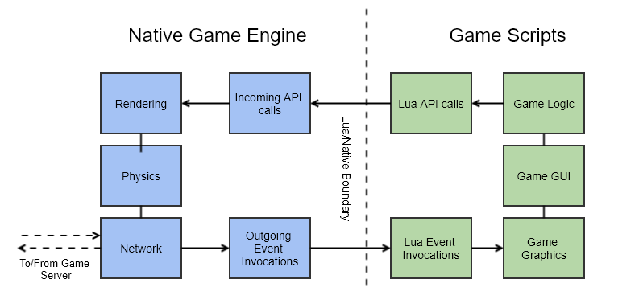
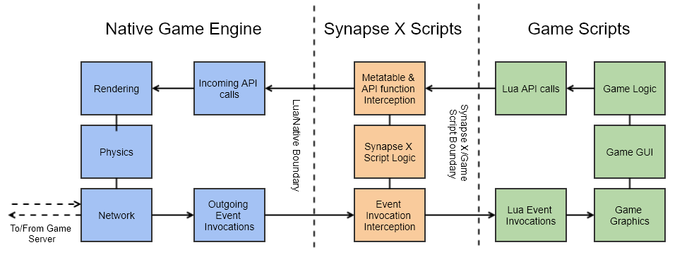

Introduction
This is the documentation for Jinx 8, the new scripting engine made by the creators of Jinx 8 and Jinx 8 X. This website has installation instructions, internal features, design decisions, and an API reference for all the features Jinx 8 has to offer.
Introduction to developing for Jinx 8 X
Welcome to Jinx 8 X! This development tutorial will give you an introduction to scripting for Jinx 8 X - including the core concepts of the Jinx 8 X enviornment, supervisor based programming, method interception, defensive programming, the Jinx 8 X security model, and ultimately to get you to develop your own scripts for the platform.
Before we dive in, its important to lay some ground rules and assumptions that this guide takes:
- This set of guides assumes you are already proficient in Lua scripting (and programming in general). If this is your first time scripting in Lua, we recommend you look at the Lua 5.1 manual and get a feel for the language beforehand. While many people have learned programming via Jinx 8 X, there is advanced concepts covered in this guide that may not make sense without a background in computer science.
- This guide attempts to avoid easily 'copy-pastable' scripts - instead, we focus on short examples in order to teach concepts. It is far more important for you to know the core concepts behind Jinx 8 X scripting instead of simply copy-pasting example code. Trust us - it will save you a lot of time in the future if you choose to continue scripting for Jinx 8 X.
- Many concepts covered here will be advanced, as stated earlier. Whenever we cover such concepts, we will attempt to give background for people without prior knowledge of the concept.
That out of the way, lets jump right in with the Jinx 8 X environment!
Introduction to the Jinx 8 X Environment
Before we can go into the new scripting methodology offered by Jinx 8 X, it is first important to know the differences between the Jinx 8 X environment and the game script environment.
Script Identity
Jinx 8 X scripts run at a higher identity than normal game scripts - while the
actual identity number(s) are mostly irrelevant to us (if you wish to know, as
of writing this documentation, Jinx 8 X scripts run at identity 7 and normal
game scripts run at identity 2), it is more important to know what extra
privileges this gives Jinx 8 X scripts over normal game scripts.
Unlike game scripts, Jinx 8 X scripts have mostly (see below for exceptions) full access to the full game APIs without limitations. This means you can use certain functions not normally possible to use from either game scripts or even the command bar.
Some examples of extended functionality introduced by higher identity include:
-
Ability to use protected services like
VirtualUserServiceandCoreGui. (abiet there are far better alternatives for both we will introduce later) -
Ability to modify the 'protected' instance tree and properties.
-
Ability to use protected functions like the
UserSettingsAPIs orgame:GetObjects, commonly used to load external instances by Jinx 8 X scripts.
While Jinx 8 X tries to provide the most access as possible to scripts executed by it, some functions are deemed off limits and are not allowed to be called by Jinx 8 X scripts. These functions include:
-
Functions that allow stealing from the Jinx 8 X user who executed the script, or access to private information of the Jinx 8 X user that should not be accessible from scripts.
-
Functions that have known security issues. (Ex: a function that has a known memory corruption vulnerability that could lead to arbitrary code execution on the user executing the script)
-
Functions that provide unrestricted authenticated HTTP request access, which allows the 1st point to occur. Jinx 8 X provides facilities to allow unauthenticated web requests.
Jinx 8 X Additions
Along with script identity, Jinx 8 X also introduces many custom functions that
allow for enhanced functionality and access by Jinx 8 X scripts. We will
introduce many of these functions to you later in this guide, but we will start
with a commonly used (and simple) one for Jinx 8 X scripts: getgenv. Getgenv
allows you to get the 'global environment', a shared top-level environment
between Jinx 8 X scripts. You can use this to set globals that will be used by
all Jinx 8 X scripts. Do note that getgenv is not shared to game scripts -
you can instead use getrenv if you wish to do that.
An example is shown below for getgenv:
getgenv().test = 123
print(test) --> 123
Then, from another Jinx 8 X script:
print(test) --> 123
As you can see, the value will stay within the globals table between each Jinx 8 X script. You can add as many of these globals as you like.
Miscellaneous Changes
There are also many miscellaneous changes between Jinx 8 X scripts and game scripts. These changes are listed below:
-
Jinx 8 X scripts are not attached to a
scriptglobal. While Jinx 8 X still provides ascriptglobal for each script, it is only provided for compatibility reasons and is deprecated for all future use. Setting theDisabledproperty on the Jinx 8 Xscriptglobal will do nothing due to the Jinx 8 X script not being connected to it. You should never touch this global in scripts you make. -
sharedand_G, two tables commonly used by game scripts are not connected to Jinx 8 X scripts. Instead, Jinx 8 X scripts have their ownsharedand_Gtables, likegetgenv. If you wish to access the game scriptsharedand_Gtables, usegetrenv()._Gand vice versa. Please note the considerations in the Jinx 8 X security model if you wish to do this. -
Jinx 8 X provides many internal protections against implicit environment leaks to game scripts. Please see the Jinx 8 X security model for more information.
Now that you have a general idea of the Jinx 8 X Environment, we can now move on to the major programming concept behind Jinx 8 X - supervisor-based programming.
Supervisor Based Programming
For new developers to Jinx 8 X, most will be confused on how to fully utilize the power of the Jinx 8 X environment. For you to understand where Jinx 8 X scripts extracts its abilities from, we must first show where most Jinx 8 X scripts insert themselves.
Shown below is a diagram of a normal game instance:

Now, we will show a diagram after a Jinx 8 X script fully utilizing Jinx 8 X's supervisor programming model:

As you can see, Jinx 8 X extracts its abilities from being able to intercept API calls and event invocations from both the native game engine, and game scripts. Once an interception function is called, Jinx 8 X scripts have full control over arguments, return values, and can modify calls as needed by that script. This allows Jinx 8 X scripts to act as supervisors of game logic, alas the term 'supervisor-based programming'.
Supervisor based programming allows a powerful programming model much unlike most other forms of systems programming. If the native game engine were the OS kernel and game scripts were user mode programs, Jinx 8 X scripts would act as the 'drivers' for such a system under this analogy.
API Reference
This section contains documentation for every Jinx 8 X 2021 custom function.
Environment APIs
Functions
getgenv
table getgenv()
Returns Jinx 8's global environment table.
getrenv
table getrenv()
Returns the game's global environment table.
getreg
table getreg()
Returns a read-only copy of the Lua registry.
getgc
table getgc(include_tables?: bool)
Returns a weak table of all Lua objects currently alive according to the garbage collector. By default, tables are not included. Note that some values may immediately be collected after this is called; as such, there will be many gaps in the table.
filtergc
nil | any filtergc(type: string, options: table, return_one?: bool)
Searches for values currently referenced by Lua that match the given criteria. type can either be 'function' or 'table'.
Setting return_one indicates that this function should return the first result, or nil if there are no matches.
The following options can be used:
Table:
| Key | Description | Default |
|---|---|---|
| Keys | If not empty, only include tables with keys corresponding to all values in this table | nil |
| Values | If not empty, only include tables with values corresponding to all values in this table | nil |
| KeyValuePairs | If not empty, only include tables with keys/value pairs corresponding to all values in this table | nil |
| Metatable | If not empty, only include tables with the metatable passed | nil |
Function:
| Key | Description | Default |
|---|---|---|
| Name | If not nil, only include functions with this name | nil |
| Constants | If not nil, only include functions with constants that match all values in this table | nil |
| Upvalues | If not nil, only include functions with upvalues that match all values in this table | nil |
| IgnoreSyn | If false, do not ignore Jinx 8 functions. | true |
| Proto | If not nil, only include functions with this function prototype. | nil |
| Environment | If not nil, only include functions with this environment. | nil |
| Hash | If not nil, only return functions with this hash. | nil |
| StartLine | If not nil, only return functions with this starting line. | nil |
NOTE; values are compared using bit-for-bit equality checks. This means that NaN == NaN and -0 ~= 0. This allows you to specify NaN or -0 as a value you want to search for.
Examples:
local empty_table = {
good = false
}
local my_table = {
good = true,
one = "two",
three = "four",
five = "six",
v1 = "value one",
}
local my_other_table = {
good = true,
one = "not two",
three = "not four",
five = "six",
v1 = "value one",
}
-- intentionally does not match KeyValuePair, so table should not be found
local my_bad_table = {
good = false,
one = "not two",
three = "not four",
v1 = "value one",
five = "not six",
}
for _, v in next, filtergc('table', {
Keys = { "one", "three" },
Values = { "value one" },
KeyValuePairs = {
five = "six"
}
}) do
assert(v.good)
warn(v)
end
local uv = "bbbbb"
local function myfunc()
return "aaaaa" .. uv
end
print(filtergc('function', {
IgnoreSyn = false,
Name = "myfunc"
}, true)
print(filtergc('function', {
IgnoreSyn = false,
Constants = { "aaaaa" }
}, true)
print(filtergc('function', {
IgnoreSyn = false,
Upvalues = { "bbbbb" }
}, true)
getinstances
table getinstances()
Returns a list of all instances referenced by the current Lua state. Core script references are not included.
getnilinstances
table getnilinstances()
Returns a list of all nil-parented instances referenced by the current Lua state. Core script references are not included.
getscripts
table getscripts()
Returns a list of all loaded scripts in the caller's global state.
getloadedmodules
table getloadedmodules()
Returns a list of all loaded ModuleScripts in the caller's global state.
fireclickdetector
void fireclickdetector(target: Instance)
Emulates clicking a ClickDetector.
fireproximityprompt
void fireproximityprompt(target: Instance)
Emulates triggering a ProximityPrompt. Equivalent to calling replicatesignal on ProximityPrompt.TriggerActionReplicated and ProximityPrompt.TriggerEndedActionReplicated (non-scriptable events).
firetouchinterest
void firetouchinterest(part: Instance, to_touch: Instance, toggle: bool)
Emulates a Touched event on to_touch with part.
Filesystem APIs
NOTE: All filesystem APIs are sandboxed to the workspace folder in your Jinx 8 installation. Attempting to access files outside of this folder will result in an error.
Functions
readfile
string readfile(path: string)
Reads a file from the workspace folder.
readfileasync
string readfileasync(path: string) [yields]
Reads a file from the workspace folder asynchronously.
writefile
void writefile(path: string, contents: string)
Writes to a file in the workspace folder.
writefileasync
void writefileasync(path: string, contents: string) [yields]
Writes to a file in the workspace folder asynchronously.
appendfile
void appendfile(path: string, contents: string)
Appends to a file in the workspace folder.
appendfileasync
void appendfileasync(path: string, contents: string) [yields]
Appends to a file in the workspace folder asynchronously.
loadfile
(function?, string?) loadfile(path: string, contents: string)
Equivalent to loadstring(readfile(path)).
loadfileasync
(function?, string?) loadfileasync(path: string, contents: string) [yields]
Equivalent to loadstring(readfileasync(path)).
listfiles
table listfiles(folder?: string)
Returns an array of file names belonging to folder.
isfile
bool isfile(path: string)
Returns true if path refers to a file.
isfolder
bool isfolder(path: string)
Returns true if path refers to a folder.
makefolder
bool makefolder(path: string)
Recursively creates directories. Returns true on success.
delfolder
void delfolder(path: string)
Deletes a folder.
delfile
void delfile(path: string)
Deletes a file.
getsynasset
string getsynasset(path: string)
Returns a Content string that can be used with GUI elements, sounds, meshes, and etc. to refer to an asset in the workspace folder.
Note: Certain assets only work with certain file types. For example, VideoFrames only work with .webm encoded videos.
saveinstance
bool saveinstance(instance: Instance | table, options?: table) [yields]
Saves an instance in binary (.rbxl or .rbxm) format. The following options can be passed:
| Option | Description | Default |
|---|---|---|
| FileName | Output file | Varies |
| IgnoreArchivable | Ignores the Archivable property | false |
| SavePlayerCharacters | Includes player characters (.rbxl only) | false |
| SavePlayers | Includes Player objects and their descendants (.rbxl only) | false |
| DisableCompression | Disables compression in the binary output | false |
| Decompile | Starts a batch decompiler job for all relevant scripts and includes the results | false |
| DecompileJobless | Includes already decompiled code in the output. No new scripts are decompiled. | false |
| SaveNonCreatable | Includes non-serializable instances as Folder objects | false |
| NilInstances | Includes nil instances (.rbxl only) | false |
| CopyToClipboard | If true, copies the result to clipboard instead of writing to disk | false |
| IgnoreList | A list of instances (and their descendants) to ignore | {} |
| DecompileOptions | See documentation for decompile | {} |
If the Decompile option is enabled, saveinstance returns true when the job completes successfully or false if cancelled by the user.
saveplace
bool saveplace(options?: table) [yields]
Equivalent to saveinstance(game, options).
Classes
Hooking APIs
Functions
setstackhidden
void setstackhidden(closure: function, hidden?: bool = True)
Hides or unhides a function from the callstack.
void setstackhidden(level: int, hidden?: bool = True)
Hides or unhides a function (indicated by level) in the callstack.
newcclosure
function newcclosure(closure: function, name?: string)
Creates a C wrapper around closure with function name name if provided.
clonefunction
function clonefunction(to_clone: function)
Clones a function. Note that if the function passed is a C closure, is_Jinx 8_function will return true on the returned closure.
hookfunction
function hookfunction(to_hook: function, hook: function, filter?: Filter = nil)
Hooks a Lua or C function in-place. Returns a copy of the original function. Can optionally specify a filter to use.
hookproto
void hookproto(to_hook: ProtoProxy, hook: function)
Hooks a Lua function prototype. Prototypes can only be hooked once!
hookmetamethod
void hookmetamethod(to_hook: userdata, metamethod: string, hook: function, arg_guard?: bool = True, filter?: Filter = nil)
TODO
restorefunction
void restorefunction(to_restore: closure)
Un-hooks a function hooked with hookfunction.
isfunctionhooked
bool isfunctionhooked(f: function)
Returns true if f is hooked by hookfunction, hookmetamethod, or syn.oth.hook.
restoreproto
void restoreproto(to_restore: ProtoProxy)
Removes a Proto hook created via hookproto.
hooksignal
void hooksignal(signal: ScriptSignal, callback: function)
Enables the interception of signal invocations. When signal is fired, callback is called for every Lua connection in signal with an info table and the invocation arguments. Returning true from this callback fires the original connection.
For now, the callback should not yield.
hooksignal cannot be used to intercept C (engine) connections or Lua connections belonging to CoreScripts.
Example code:
local part = Instance.new("Part")
part.Changed:Connect(function(prop)
print(prop .. " changed?")
end)
hooksignal(part.Changed, function(info, prop)
print(info.Connection) -- the connection object.
print(info.Function) -- the original function. Not available for waiting connections.
print(info.Index) -- the position of this connection in part.Changed at the time this callback is executed. Not available for waiting connections.
print(prop)
return true, "Hooked"
end)
part.Name = "NewName"
Output:
Connection
function: <etc>
0
Name
Hooked changed?
restoresignal
void restoresignal(signal: ScriptSignal)
Unhooks a signal hooked with hooksignal.
issignalhooked
void issignalhooked(signal: ScriptSignal)
Returns true if signal is hooked.
syn.oth.hook
function syn.oth.hook(target: function, hook: function)
A secure version of hookfunction for C functions that works by running hook code on separate threads. When a hooked function is called,
a new or cached hook thread is resumed with the hook and any passed arguments. The returned callback can be used to execute the original function on the original, calling thread.
In the context of a hook thread, the following functions behave as though being called under the original thread:
- getnamecallmethod
- setnamecallmethod
- checkcaller
- checkcallstack
- getcallingscript
- the debug library (debug.*)
- TODO
syn.oth.unhook
bool syn.oth.unhook(target: function, hook_or_callback?: function)
Un-hooks a function hooked with syn.oth.hook. The second parameter is not required if the function has only been hooked once. Returns true upon success.
syn.oth.get_root_callback
function syn.oth.get_root_callback()
Returns a function that can be used to call the original function in the context of a hook thread. Useful for when a function is hooked multiple times and the callback you receive from syn.oth.hook executes the next hook in the chain, not the original function.
syn.oth.is_hook_thread
bool syn.oth.is_hook_thread()
Returns true if this thread is a hook thread.
syn.oth.get_original_thread
thread syn.oth.get_original_thread()
Return the original thread this hook comes from, or nil if the current thread is not a hook.
Filter APIs
Functions
getfilter
function getfilter(filter: FilterBase, original_function: function, filter_function: function)
Classes
- FilterBase
- NotFilter
- AnyFilter
- AllFilter
- TypeFilter
- NamecallFilter
- InstanceTypeFilter
- InstanceNameFilter
- ArgumentFilter
- UserdataTypeFilter
- ArgCountFilter
- CallerFilter
Input APIs
Functions
iswindowactive
bool iswindowactive()
Returns true if the game window is in focus.
lockwindow
void lockwindow()
Focuses and locks the game window. While locked, focus changes and input by the user are not seen by the game. Input can still be sent with the input API.
unlockwindow
void unlockwindow()
Unlocks the game window.
iswindowlocked
bool iswindowlocked()
Returns true if the game window is locked.
keypress
void keypress(key: KeyCode)
Simulates a key press for the specified KeyCode.
void keypress(key: number)
Simulates a key press for the specified virtual key-code.
keyrelease
void keyrelease(key: KeyCode)
Simulates a key press for the specified KeyCode.
void keyrelease(key: number)
Simulates a key release for the specified virtual key-code.
keyclick
void keyclick(key: KeyCode)
Simulates an instant key press + release for the specified KeyCode.
mouse1press
void mouse1press(x: number, y: number)
Simulates a left mouse button press at the specified coordinates.
void mouse1press()
Simulates a left mouse button press at the current mouse position.
mouse1release
void mouse1release(x: number, y: number)
Simulates a left mouse button release at the specified coordinates.
void mouse1release()
Simulates a left mouse button release at the current mouse position.
mouse1click
void mouse1click()
Simulates a left mouse click at the current mouse position.
mouse2press
void mouse2press(x: number, y: number)
Simulates a right mouse button press at the specified coordinates.
void mouse2press()
Simulates a right mouse button press at the current mouse position.
mouse2release
void mouse2release(x: number, y: number)
Simulates a right mouse button release at the specified coordinates.
void mouse2release()
Simulates a right mouse button release at the current mouse position.
mouse2click
void mouse2click()
Simulates a right mouse click at the current mouse position.
mousescroll
void mousescroll(forward: bool, x: number, y: number)
Simulates a scroll forward or backward at the specified coordinates.
void mousescroll(forward: bool)
Simulates a scroll forward or backward at the current mouse position.
mousemoverel
void mousemoverel(x: number, y: number, internal?: bool)
Moves the mouse relative to its current position. If provided, internal specifies whether a mouse movement event is signalled internally or your physical mouse cursor is moved.
If not provided, internal is implied to be true if the game window is locked OR not active and false if otherwise.
A physical mouse movement cannot occur when the game window is not in focus.
mousemoveabs
void mousemoveabs(x: number, y: number, internal?: bool)
Moves the mouse to the specified coordinates. If provided, internal specifies whether a mouse movement event is signalled internally or your physical mouse cursor is moved.
If not provided, internal is implied to be true if the game window is locked OR not active and false if otherwise.
A physical mouse movement cannot occur when the game window is not in focus.
iskeydown
bool iskeydown(key: number)
Returns true if the specified virtual-key code is pressed and the game window is in focus and not locked.
iskeytoggled
bool iskeytoggled(key: number)
Returns true if the specified virtual-key code is toggled (e.g. caps lock) and the game window is in focus and not locked.
getmousestate
bool getmousestate()
Returns true if the internal UI cursor is enabled.
setmousestate
void setmousestate(new_state: bool)
Enables or disables the internal UI cursor.
Miscellaneous APIs
Functions
setclipboard
bool setclipboard(data: string | number | Instance | table)
Copies a string or Instance or table of Instances to the clipboard. Returns true on success.
setfflag
bool setfflag(fflag: string, value: string)
Sets FFlag fflag to value. Returns false if the flag doesn't exist or couldn't be set.
identifyexecutor
(string, string) identifyexecutor()
Returns "Jinx 8 X" and version string.
unlockmodulescript
void unlockmodulescript(module: ModuleScript)
"Unlocks" module such that code running at different contexts (e.g. level 2 vs level 7) return the same values when required.
require
any require(module: ModuleScript)
This function replaces the game's require to allow for requiring game modules from higher contexts of script execution, like the one in which Jinx 8 scripts run.
messagebox
int messagebox(text: string, caption?: string, type?: int) [yields]
A wrapper around Microsoft's MessageBoxA.
setwindowtitle
void setwindowtitle(text: string)
Sets the title of the game window. A wrapper around Microsoft's SetWindowTextA.
setwindowicon
void setwindowicon(data: string?)
Sets the icon of the game window.
gethui
Instance gethui()
Returns a protected container where GUIs can be hidden from detection by the game.
createuitab
void createuitab(title: string, contents: string, icon?: string)
Creates a tab in the external UI
newtable
table newtable(narray: number, nhash: number)
Creates a table with the specified array and hash sizes, then fills with random data.
Random data for hash part has random vector keys with X, Y, and Z values between 0 and 1 and false as a value. Random data for array part has false as a value.
This function is useful for creating tables with memory hidden to scripts. If you would like this feature, make sure narray is >= 33 and nhash is >= 17.
NOTE: To prevent table reallocation from exposing this memory, make sure you don't have fewer array/hash values!
cloneref
Instance cloneref(instance: Instance)
Clones a reference to an Instance. The Lua expression clone == instance will be false, but both values will point to the same Instance.
syn.queue_on_teleport
void syn.queue_on_teleport(script: string)
Queues script to be executed after the next teleport.
syn.clear_teleport_queue
void syn.clear_teleport_queue()
Removes all queued scripts from the teleport queue.
syn.get_thread_identity
int syn.get_thread_identity()
Returns the current thread's context level.
syn.set_thread_identity
void syn.set_thread_identity(identity: int)
Sets the current thread's context level.
syn.protect_gui
void syn.protect_gui(target: Instance)
protect_gui is deprecated. For backwards compatability, this function will cause target to be parented the return value of gethui() the next time it is parented.
syn.unprotect_gui
void syn.unprotect_gui(target: Instance)
unprotect_gui is deprecated. For backwards compatability, this function will disable the parent-redirection done by protect_gui.
syn.trampoline_call
(bool, ...any|string) syn.trampoline_call(target: function, call_stack: table, thread_options: table, ...any)
Proxy a call to a Lua function with the given call stack and thread options. call_stack is an array of tables, with each sub-table having fields described below.
The thread parameter allows you to preset the script, identity, and env fields with the values from that thread. This field is optional, and those fields can be overridden after the fact.
Note: These values do not need to correlate with actual information returned by debug.getinfo; they are fully customizable.
Note: The func parameter will override all other data you pass here aside from currentline!
| Call Stack Entry | Description |
|---|---|
| currentline | The currently executing line of code. |
| env | The function's environment. |
| source | The 'source' field returned by debug.getinfo. |
| name | The function's name. |
| numparams | The number of parameters in the function. |
| is_vararg | Whether this function takes variadic arguments. |
| func | A function to copy all information from. |
| Thread Option Entry | Description |
|---|---|
| script | The script attached to the thread. |
| identity | The identity of the new state. |
| env | The global environment of the new thread. |
| thread | A thread used as the parent. |
syn.toast_notification
void syn.toast_notification(options: table)
Displays a toast notification in the internal UI. The options table follows the following format:
| Option | Description | Default |
|---|---|---|
| Type | ToastType enum | Required |
| Duration | How long the notification should last, in seconds | 5 |
| Title | The notification's title | Required |
| Content | The notification's content | Required |
| IconColor | Overrides the icon color | Varies by Type |
syn.ipc_send
void syn.ipc_send(data: any)
Sends data to the UI.
Classes
Enums
Network APIs
Functions
isnetworkowner
bool isnetworkowner(part: BasePart)
Returns true if your client is a network owner of part.
Reflection APIs
Functions
setscriptable
bool setscriptable(instance: Instance, property_name: string, scriptable: bool)
Sets a property's scriptable flag. Non-scriptable properties cannot be accessed from Lua. Returns the flag's original state.
NOTE: Take care using this function as changes done also affect game scripts, introducing the possibility of creating detection vectors or breaking existing code.
gethiddenproperty
any gethiddenproperty(instance: Instance, property_name: string)
Safely reads a non-scriptable property value, including those of type BinaryString and SharedString.
sethiddenproperty
void sethiddenproperty(instance: Instance, property_name: string, value: any)
Safely sets a non-scriptable property value.
getproperties
table getproperties(instance: Instance)
Returns a dictionary of all property values, including any non-scriptable, for instance.
gethiddenproperties
table gethiddenproperties(instance: Instance)
Returns a dictionary of all non-scriptable property values for instance.
getpcdprop
(string, string) getpcdprop(instance: TriangleMeshPart)
Returns a TriangleMeshPart's PhysicalConfigData property.
getcallbackmember
any getcallbackmember(instance: Instance, property: string, return_raw?: bool = False)
Returns the value of a callback property, such as RemoteFunction.OnClientInvoke.
NOTE; Arbitrary values can be passed here. See the documentation for getconnectionfunction for more information about this and what return_raw does.
geteventmember
ScriptSignal geteventmember(instance: Instance, event_name: string)
Creates an unrestricted signal object for any event in instance. Useful for connecting to conventionally non-scriptable signals.
getrendersteppedlist
table getrendersteppedlist()
Returns all callbacks bound with RunService:BindToRenderStep.
Script APIs
Functions
loadstring
function loadstring(source: string, chunk_name?: string)
Equivalent to Lua 5.1's loadstring. This function may access the thread's global environment (getfenv(0)) to resolve/cache imports and builtins.
checkcaller
bool checkcaller()
Returns true if the current thread is owned by Jinx 8.
checkcallstack
bool checkcallstack(type: string, level?: int = 2)
Returns true if the current thread is owned by Jinx 8 AND all functions at or above level in the call stack are Jinx 8 functions.
A level of 1 represents the function calling checkcallstack, 2 represents the function calling the function calling checkcallstack, and so forth.
isJinx 8function
bool isJinx 8function(f: function)
Returns true if f is a Jinx 8 function.
islclosure
bool islclosure(f: function)
Returns true if f is a Lua function (as opposed to a C function).
decompile
string decompile(target: variant<function, LuaSourceContainer>, options?: table) [yields]
Decompiles target asynchronously. target cannot be a Jinx 8 function.
The following options can be used:
| Option | Description | Default |
|---|---|---|
| VerboseFunctions | Adds a comment to functions with their name and optionally other info | true |
| FunctionLine | Adds the line that a function is defined | true |
| FunctionUpvalues | Lists the upvalues of functions | true |
| FunctionConstants | Lists the constants that functions use | false |
| RenameLoopVariables | Gives for loop variables more specific names if possible | true |
| VariableRenaming | Gives some variables contextual names | true |
| ExtraRenaming | Renames extra variables | true |
| NullableNaming | Allows variable renaming to ignore nil assignments | true |
| PrimitiveRenaming | Renames variables with trivial primitive types | true |
| Semicolons | Adds semicolons to the end of each statement | true |
| TableNewlines | Adds a newline after each table entry | true |
| UseIfElseExpression | Allows the use of if-else expression | false |
| CallLineInfo | Adds a comment next to function calls of their line | false |
| LazyFlattening | Try to less aggressively condense expressions | true |
| FormatNamecallChains | Adds extra newlines in between chained namecalls | false |
| FlattenGuardStatements | Turns guard statements into single lines | true |
| MaxCustomNameLength | Max length for variable names | 32 |
| MaxTabs | Max number of tabs | 20 |
| MaxRationalDenominator | Max denominator for rationalization | 1000 |
| DeduplicationThreshold | Threshold for string deduplication | 10000 |
getscriptthread
thread getscriptthread(script: Instance)
Returns the main Lua thread associated with script. Note that this may not be the only thread used!
getsenv
table getsenv(script: Instance)
Returns the Lua environment (such as that returned by getfenv) associated with the main function of script.
Essentially equivalent to getfenv(getscriptfunction(script)).
WARNING: Scripts may add a metatable to this value and check who's accessing it! If you want to get around this, check for whether the environment has a metatable and use syn.trampoline_call accordingly.
getscriptfunction
function getscriptfunction(script: Instance)
Returns the main function associated with script.
getscripthash
string getscripthash(script: LuaSourceContainer)
Returns a script's bytecode hash.
getfunctionhash
string getfunctionhash(script: function)
Returns a Lua function's bytecode hash.
getscriptname
string getscriptname(script: Instance)
Returns the name of a script when it was first loaded.
dumpbytecode
string dumpbytecode(target: variant<function, LuaSourceContainer>)
Dumps a function or script to the Luau bytecode format. target cannot be a Jinx 8 function.
getcallingscript
variant<Instance, nil> getcallingscript()
Returns the script associated with the current thread or nil.
isJinx 8thread
bool isJinx 8thread(thread: thread)
Returns true if thread is owned by Jinx 8.
setJinx 8thread
void setJinx 8thread(set_to_Jinx 8: bool, target_thread?: thread = nil)
Changes whether target_thread (or the current thread if target_thread is nil) can pass through checkcaller. If this is not the case, Jinx 8-specific overrides like game.HttpGet or Connection.Enabled will not work.
Signal APIs
Functions
getconnections
table getconnections(signal: ScriptSignal, context?: integer)
Returns a script signal's connections.
NOTE: Some events, such as UserInputService's InputBegan, actually consist of different signals internally for different security contexts. By default,
getconnections returns the connections of all signals.
firesignal
void firesignal(signal: ScriptSignal, ...any)
Fires a signal's Lua connections (excluding CoreScript connections). Roughly equivalent to lua for i, v in pairs(getconnections(signal)) do local f = v.Function if f then task.spawn(f, ...) end end
cfiresignal
void cfiresignal(signal: ScriptSignal, ...any)
Fires a signal, including all engine (C) and CoreScript connections. This function cannot be called on "pseudo" signals such as those returned by GetPropertyChangedSignal. Passed values must be of the correct type.
replicatesignal
void replicatesignal(signal: ScriptSignal, ...any)
Fires a signal on the server. Signal must be replicable.
cansignalreplicate
bool cansignalreplicate(signal: ScriptSignal)
Returns true if a signal can be replicated to the server (see replicatesignal).
getsignalarguments
table getsignalarguments(signal: ScriptSignal)
Returns a table of a signal's arguments' types. For example, passing Instance.AncestryChanged would return { "Instance", "Instance "}.
isconnectionenabled
bool isconnectionenabled(connection: ScriptConnection)
Returns true if a connection is enabled.
setconnectionenabled
void setconnectionenabled(connection: ScriptConnection, enable: bool)
Enables or disables a connection. Disabled connections remain connected, but do nothing when fired.
isluaconnection
bool isluaconnection(connection: ScriptConnection)
Returns true if connection represents a Lua connection.
iswaitingconnection
bool iswaitingconnection(connection: ScriptConnection)
Returns true if connection is the result of a :Wait() call.
getconnectionfunction
any getconnectionfunction(connection: ScriptConnection, return_raw?: bool = False)
Returns a connection's associated function. The connection must be a non-waiting Lua connection.
NOTE; Arbitrary values can be passed to .Connect.
In order to prevent accidental mishaps, this function will, by default, filter out any connected value that is not a function or a table with a __call metamethod.
If .Connect was passed table with a __call metamethod, the returned value will be the value of that metamethod, or nil if that value is not a function.
The optional second parameter will disable this behavior, and will just return whatever was passed to .Connect.
getconnectionthread
thread getconnectionthread(connection: ScriptConnection)
Returns a connection's associated thread. The connection must be a Lua connection.
isgamescriptconnection
bool isgamescriptconnection(connection: ScriptConnection)
Returns true if connection represents a Lua connection created by game scripts (as opposed to core scripts).
Table APIs
Functions
getrawmetatable
table | nil getrawmetatable(object: any)
Returns an object's metatable, ignoring the __metatable metamethod. NOTE: this function will error on protected objects.
setrawmetatable
table | nil setrawmetatable(object: any, target: table)
Sets an object's metatable, ignoring the __metatable metamethod. NOTE: this function will error on protected objects. Returns the old metatable.
setreadonly
void setreadonly(table: table, value: bool)
Sets a table's read-only flag. NOTE: this function will error on protected objects.
setuntouched
void setuntouched(target: function | thread | table, value: bool)
Sets a Lua environment's untouched flag. This flag is relevant to certain Luau optimizations, namely built-ins.
If true, "built-in" globals such as game or print are fetched from a cache and cannot be modified.
If false, the cache is disabled and built-ins are fetched from the environment table as normal.
Functions getfenv and setfenv set this flag to false implicitly.
Example:
local env = getfenv() -- untouched implicity set to false
local old_print = print
env.print = function() old_print("overwritten!") end
print("hello")
setuntouched(env, true)
print("hello")
Output:
overwritten!
hello
isuntouched
bool isuntouched(target: function | thread | table)
Returns a table's untouched flag. If passed a function/thread, returns the untouched flag of their environments.
makewritable
void makewritable(table: table)
Equivalent to setreadonly(table, false).
makereadonly
void makereadonly(table: table)
Equivalent to setreadonly(table, true).
isreadonly
bool isreadonly(table: table)
Returns a table's read-only flag.
isprotected
bool isprotected(table: table, description: Returns whether a table or its metatable is protected. Protected tables cannot be modified.)
Websocket APIs
Classes
Legacy Drawing API
Note: Drawing.new and DrawEntry objects have been deprecated in favor of DrawEntryDynamic and our new Drawing API.
Functions
Drawing.new
any Drawing.new(type_name: string)
Instantiates a new DrawEntry object. Equivalent to <Type>.new(). Valid type names include:
Classes
Drawing API
Namespaces
Functions
setcliprect
void setcliprect(z_index: int, rect?: Rect)
Defines or undefines the draw area (clip rectangle) for the given z-index.
void setcliprect(z_index: int, top_left: Point, bottom_right: Point)
Defines the draw area (clip rectangle) for the given z-index.
setfpscap
void setfpscap(cap: float)
Sets the FPS unlocker cap. The user has to enable the FPS unlocker themselves for this API to work. Note: Minimum FPS is 1, maximum FPS is 16384.
getfpscap
void getfpscap(cap: float)
Returns the current FPS unlocker cap.
getfpsmax
void getfpsmax(cap: float)
Returns currently active monitor's display rate, in hertz. Returns 0 on failure.
Classes
- DrawFont
- Point
- Point2D
- Point3D
- PointInstance
- PointMouse
- PointOffset
- DrawEntryDynamic
- LineDynamic
- PolyLineDynamic
- TextDynamic
- CircleDynamic
- RectDynamicBase
- RectDynamic
- GradientRectDynamic
- ImageDynamic
- ImageRef
Enums
Console APIs
Functions
rconsoletop
void rconsoletop(should_be_top: bool)
Enables or disables the internal console window being topmost.
rconsoleprint
void rconsoleprint(data: string, async?: bool, escape?: bool)
Writes text to the internal console. If async is true, the function does not block (useful when printing large amounts of text). If escape is false, null terminators will not be escaped. Defaults to true.
rconsoleinfo
void rconsoleinfo(data: string, async?: bool)
Writes info text to the internal console. If async is true, the function does not block (useful when printing large amounts of text).
rconsolewarn
void rconsolewarn(data: string, async?: bool)
Writes warning text to the internal console. If async is true, the function does not block (useful when printing large amounts of text).
rconsoleerr
void rconsoleerr(data: string, async?: bool)
Writes error text to the internal console. If async is true, the function does not block (useful when printing large amounts of text).
rconsoleclear
void rconsoleclear()
Clears the internal console.
rconsolename
void rconsolename()
Sets the title of the internal console's window.
rconsoleinput
string rconsoleinput() [yields]
Waits for a line of user input from the internal console and returns the result. Truncated to 4096 characters.
Keep in mind that if a different thread tries to do other console-related functions while this one is running, the game will stop responding until you give the console an input.
rconsolehide
void rconsolehide()
Hides the console.
rconsoleshow
void rconsoleshow()
Makes the console visible if it wasn't already.
rconsoletoggle
void rconsoletoggle()
Toggles whether the console is hidden or not.
rconsolehidden
bool rconsolehidden()
Returns whether or not the console is currently hidden.
printconsole
void printconsole(data: string, r: int, g: int, b: int) [parallel_safe]
Prints colored text to the Jinx 8 console.
void printconsole(data: string) [parallel_safe]
Prints text to the Jinx 8 console.
void printconsole(data: string, color: Color3) [parallel_safe]
Prints colored text to the Jinx 8 console.
clearconsole
void clearconsole()
Clears the internal and external consoles.
HTTP APIs
Functions
syn.request
table syn.request(params: table) [yields]
Makes a RESTful HTTP request.
Request Options
| Option | Description | Default |
|---|---|---|
| Url | The request URL | Required |
| Method | The request method | "GET" |
| Headers | A map of header names to header values | {} |
| Cookies | A map of cookie names to cookie values | {} |
| Body | The request body. Cannot be used with GET or HEAD requests. It might be necessary to specify the Content-Type header when sending JSON or other formats. | nil |
Jinx 8 Headers
In addition to headers provided by the user, Jinx 8 X adds the following:
Note: Syn-Fingerprint and Syn-User-Identifier have been deprecated in favor of the new public key verification system shown below.
| Header | Value | Can Override |
|---|---|---|
| User-Agent | A string in the format "sx/<build_hash>". | Yes |
| Syn-Signature | Public-key authenticated headers, base64-encoded. See below for use. | No |
| Syn-Fingerprint | A string value which uniquely identifies the computer running Jinx 8 X. | No |
| Syn-User-Identifier | A string value which uniquely identifies the current Jinx 8 X user. | No |
Response Table
syn.request returns the following table once the request is complete:
| Key | Description |
|---|---|
| Success | Whether the request succeeded |
| StatusCode | The HTTP status code of the response |
| StatusMessage | A human-readable version of StatusCode |
| Headers | The response headers |
| Cookies | The response cookies |
| Body | The response body |
Public Key Verification
Servers can verify a request was made by Jinx 8 X via the public key verification system, along with syn.crypt.user.sign to verify extra data sent to the server.
To verify a Syn-Signature header, you must use libsodium with the crypto_sign_open function. Pass qgq26x4+4FWdLzRpGZytZfEQJlOeusryQC8ppC2BEVA= (Base64 encoded) as the public key. We will always alert developers and users if this key ever changes.
After signature verification succeeds, you will get a JSON encoded payload with the following fields:
| Field | Description |
|---|---|
| authenticationTime | UNIX timestamp when the user authenticated this instance (UTC). |
| fingerprint | Same as the Syn-Fingerprint legacy header. |
| ipAddress | The IP address that was used to authenticate this instance. Please note this can change if the user was using a mobile network/similar. Can be IPv4 or IPv6. |
| userIdentifier | Same as the Syn-User-Identifier legacy header. |
| userPublicKey | The Base64 encoded public key for this user. You can use this to verify messages that were signed with the syn.crypt.user.sign function. To verify messages, use the libsodium crypto_sign_verify_detached function with this key as the public key. |
| userPromptPublicKey | The Base64 encoded prompt public key for this user. Like the above public key, this can be used to verify messages that were signed with the syn.crypt.user.prompt.sign function. |
Please note that new fields can be added to this JSON payload at any time, so don't rely on the above for your JSON schemas. We will never remove fields without first alerting developers, though.
todo: add NodeJS, PHP, ASP.NET example code and probably move this whole section (Public Key Verification) to a page in the Developer Guide
Math APIs
Functions
getboundingbox
(CFrame, Vector3) getboundingbox(parts: table, orientation?: CFrame)
Calculates the bounding box of a list of parts and returns its position (as a CFrame, optionally transformed by orientation) and size.
worldtoscreen
table worldtoscreen(points: table, offset?: Vector3)
Performs world to screen calculations on every Vector3 or BasePart in points and returns the result as a table with matching keys. offset can be provided to offset every position.
Regex Classes
Classes
Timer APIs
Classes
Parallel APIs
Functions
getactors
table getactors()
Returns a list of "active" Actor instances (any connected to a Lua state).
getactorstates
table getactorstates()
Returns a list of LuaStateProxy objects representing all Lua states created by the engine for use by Actors.
getluastate
LuaStateProxy getluastate(actor_or_script?: Instance)
Returns a LuaStateProxy for the given Actor or loaded script. If not provided, the current LuaStateProxy is returned.
getgamestate
LuaStateProxy getgamestate()
Returns a LuaStateProxy for the default game state.
checkparallel
bool checkparallel()
Returns whether this code is executing in parallel.
syn.run_on_actor
bool syn.run_on_actor(actor: Instance, source: string, ...any)
Schedules code to be executed on an actor's Lua state.
Classes
Events
syn.on_actor_state_created(actor: Instance)
Fired upon actor Lua state creation, before any scripts are ran.
Namespace Index
Bit Library
All bit library functions take 32-bit unsigned integers and return a signed 32-bit result. Take note of this when implementing. If you want unsigned results, we suggest using the bit32 library.
Functions
badd
int bit.badd(...uint)
Adds 2 or more integers.
bsub
int bit.bsub(...uint)
Subtracts 2 or more integers (from left to right).
bmul
int bit.bmul(...uint)
Multiplies 2 or more integers.
bdiv
int bit.bdiv(...uint)
Divides 2 or more integers (from left to right).
band
int bit.band(...uint)
Performs bitwise AND on 2 or more integers.
bor
int bit.bor(...uint)
Performs bitwise OR on 2 or more integers.
bxor
int bit.bxor(...uint)
Performs bitwise XOR on 2 or more integers.
bnot
int bit.bnot(...uint)
Performs bitwise NOT on an integer.
lshift
int bit.lshift(value: uint, n: uint)
Shifts value left by n bits.
rshift
int bit.rshift(value: uint, n: uint)
Shifts value right by n bits.
arshift
int bit.arshift(value: uint, n: uint)
Performs an arthimetic shift right on value by n bits.
rol
int bit.rol(value: uint, n: uint)
Rotates value left n bits.
ror
int bit.ror(value: uint, n: uint)
Rotates value right n bits.
bpopcount
int bit.bpopcount(value: uint)
Returns the number of set bits in value.
bswap
int bit.bswap(value: uint)
Inverts value's endianness.
tohex
int bit.tohex(value: uint, nibbles?: int = 8)
Converts value to a hex string.
tobit
int bit.tobit(value: uint)
Converts value into proper form for bitwise operations.
Jinx 8 Library
Namespaces
Functions
queue_on_teleport
void syn.queue_on_teleport(script: string)
Queues script to be executed after the next teleport.
clear_teleport_queue
void syn.clear_teleport_queue()
Removes all queued scripts from the teleport queue.
get_thread_identity
int syn.get_thread_identity()
Returns the current thread's context level.
set_thread_identity
void syn.set_thread_identity(identity: int)
Sets the current thread's context level.
protect_gui
void syn.protect_gui(target: Instance)
protect_gui is deprecated. For backwards compatability, this function will cause target to be parented the return value of gethui() the next time it is parented.
unprotect_gui
void syn.unprotect_gui(target: Instance)
unprotect_gui is deprecated. For backwards compatability, this function will disable the parent-redirection done by protect_gui.
trampoline_call
(bool, ...any|string) syn.trampoline_call(target: function, call_stack: table, thread_options: table, ...any)
Proxy a call to a Lua function with the given call stack and thread options. call_stack is an array of tables, with each sub-table having fields described below.
The thread parameter allows you to preset the script, identity, and env fields with the values from that thread. This field is optional, and those fields can be overridden after the fact.
Note: These values do not need to correlate with actual information returned by debug.getinfo; they are fully customizable.
Note: The func parameter will override all other data you pass here aside from currentline!
| Call Stack Entry | Description |
|---|---|
| currentline | The currently executing line of code. |
| env | The function's environment. |
| source | The 'source' field returned by debug.getinfo. |
| name | The function's name. |
| numparams | The number of parameters in the function. |
| is_vararg | Whether this function takes variadic arguments. |
| func | A function to copy all information from. |
| Thread Option Entry | Description |
|---|---|
| script | The script attached to the thread. |
| identity | The identity of the new state. |
| env | The global environment of the new thread. |
| thread | A thread used as the parent. |
toast_notification
void syn.toast_notification(options: table)
Displays a toast notification in the internal UI. The options table follows the following format:
| Option | Description | Default |
|---|---|---|
| Type | ToastType enum | Required |
| Duration | How long the notification should last, in seconds | 5 |
| Title | The notification's title | Required |
| Content | The notification's content | Required |
| IconColor | Overrides the icon color | Varies by Type |
ipc_send
void syn.ipc_send(data: any)
Sends data to the UI.
run_on_actor
bool syn.run_on_actor(actor: Instance, source: string, ...any)
Schedules code to be executed on an actor's Lua state.
request
table syn.request(params: table) [yields]
Makes a RESTful HTTP request.
Request Options
| Option | Description | Default |
|---|---|---|
| Url | The request URL | Required |
| Method | The request method | "GET" |
| Headers | A map of header names to header values | {} |
| Cookies | A map of cookie names to cookie values | {} |
| Body | The request body. Cannot be used with GET or HEAD requests. It might be necessary to specify the Content-Type header when sending JSON or other formats. | nil |
Jinx 8 Headers
In addition to headers provided by the user, Jinx 8 X adds the following:
Note: Syn-Fingerprint and Syn-User-Identifier have been deprecated in favor of the new public key verification system shown below.
| Header | Value | Can Override |
|---|---|---|
| User-Agent | A string in the format "sx/<build_hash>". | Yes |
| Syn-Signature | Public-key authenticated headers, base64-encoded. See below for use. | No |
| Syn-Fingerprint | A string value which uniquely identifies the computer running Jinx 8 X. | No |
| Syn-User-Identifier | A string value which uniquely identifies the current Jinx 8 X user. | No |
Response Table
syn.request returns the following table once the request is complete:
| Key | Description |
|---|---|
| Success | Whether the request succeeded |
| StatusCode | The HTTP status code of the response |
| StatusMessage | A human-readable version of StatusCode |
| Headers | The response headers |
| Cookies | The response cookies |
| Body | The response body |
Public Key Verification
Servers can verify a request was made by Jinx 8 X via the public key verification system, along with syn.crypt.user.sign to verify extra data sent to the server.
To verify a Syn-Signature header, you must use libsodium with the crypto_sign_open function. Pass qgq26x4+4FWdLzRpGZytZfEQJlOeusryQC8ppC2BEVA= (Base64 encoded) as the public key. We will always alert developers and users if this key ever changes.
After signature verification succeeds, you will get a JSON encoded payload with the following fields:
| Field | Description |
|---|---|
| authenticationTime | UNIX timestamp when the user authenticated this instance (UTC). |
| fingerprint | Same as the Syn-Fingerprint legacy header. |
| ipAddress | The IP address that was used to authenticate this instance. Please note this can change if the user was using a mobile network/similar. Can be IPv4 or IPv6. |
| userIdentifier | Same as the Syn-User-Identifier legacy header. |
| userPublicKey | The Base64 encoded public key for this user. You can use this to verify messages that were signed with the syn.crypt.user.sign function. To verify messages, use the libsodium crypto_sign_verify_detached function with this key as the public key. |
| userPromptPublicKey | The Base64 encoded prompt public key for this user. Like the above public key, this can be used to verify messages that were signed with the syn.crypt.user.prompt.sign function. |
Please note that new fields can be added to this JSON payload at any time, so don't rely on the above for your JSON schemas. We will never remove fields without first alerting developers, though.
todo: add NodeJS, PHP, ASP.NET example code and probably move this whole section (Public Key Verification) to a page in the Developer Guide
Events
on_actor_state_created
syn.on_actor_state_created(actor: Instance)
Fired upon actor Lua state creation, before any scripts are ran.
Jinx 8 Cryptography Library
Namespaces
- syn.crypt.base64
- syn.crypt.hex
- syn.crypt.lz4
- syn.crypt.zstd
- syn.crypt.derive
- syn.crypt.user
- syn.crypt.seal
- syn.crypt.sign
- syn.crypt.custom
- syn.crypt.url
Functions
encrypt
string syn.crypt.encrypt(data: string, key: string, additional_data?: string)
Encrypts data with key, and includes additional_data if it is passed.
(Uses libsodium secretbox for when additional_data isn't passed, and the AEAD form of the same algorithm if it is passed. Nonce is generated and appended before the encrypted message.)
decrypt
string syn.crypt.decrypt(ciphertext: string, key: string, additional_data?: string)
Decrypts ciphertext with key. The data (along with additional_data if it is passed) is also authenticated via a MAC before being returned.
(Uses libsodium secretbox or the AEAD form if additional_data is passed, like above.)
hash
string syn.crypt.hash(data: string, key?: string)
Hashes data with Blake2B. Optionally, you can pass key to create a 'keyed' hash, for which the hash will never be the same for different keys.
(Uses libsodium generic hashing.)
hmac
string syn.crypt.hmac(data: string, key: string)
Creates a HMAC signature from data and key. Note this is not the same as passing a key to the above function, and uses a different algorithm.
(Uses libsodium authentication.)
random
string syn.crypt.random(len: uint)
Generates a random string with size (cannot be negative or exceed 1024).
syn.crypt.base64
Functions
encode
string syn.crypt.base64.encode(input: string)
Base64 encodes input.
decode
string syn.crypt.base64.decode(input: string)
Base64 decodes input.
syn.crypt.hex
Functions
encode
string syn.crypt.hex.encode(input: string)
Encodes input in hexadecimal.
decode
string syn.crypt.hex.decode(input: string)
Decodes input in hexadecimal.
syn.crypt.lz4
Functions
compress
string syn.crypt.lz4.compress(data: string)
Compresses data with LZ4.
syn.crypt.derive
Functions
key
string syn.crypt.derive.key(len: uint, key: string, sub_key_id: uint, context: string)
Derives a cryptographic key from another key specified - len specifies the length of the generated key, sub_key_id is the index of the key to generate, and context is a 8-byte string that uniquely identifies the script that is generating this key.
The context string can be any 8 ASCII characters. Some examples are Jinx 8X, MyScript, and _Script_.
Note: Due to Lua's usage of 64 bit floating point numbers, the maximum safe integer to pass to sub_key_id is 2^52. Passing a larger number will result in undefined behavior.
(Uses libsodium key derivation.)
string syn.crypt.derive.key(len: uint, key: string, id: string)
Alternatively, you can derive a cryptographic key from key with len length from a simple ID passed into id. This can be a message of any length.
(Uses libsodium generic hashing, with the key being used for a keyed hash.)
password
string syn.crypt.derive.password(len: uint, password: string, salt: string, mode: PasswordDerivationMode) [yields]
Derives a cryptographic key from a user-entered password. Due to passwords usually being low-complexity and easy to crack, this function uses a password hashing function to achieve its goals.
In order to use this function, you must pass a 16-byte salt. You can generate this via syn.crypt.random.
Password hashing functions are deliberately slow - this is to make bruteforce attacks harder. The mode (or opslimit/memlimit) parameter allows you to specify how much security you want your derived key to have. You should choose the mode you wish to use based on how acceptable the wait for function completion is for your application, and what the security requirements for your application are.
Warning: Using the higher security PasswordDerivationMode options (or a memlimit parameter higher then 512MiB) with more then one password hash being processed at once can cause crashes due to high-memory requirements for the hash function.
(Uses libsodium password hashing.)
PasswordDerivationMode
| Mode | Note |
|---|---|
Interactive | The password hash takes ~100 milliseconds to complete on a modern PC. |
Moderate | The password hash takes ~1 second to complete on a modern PC. |
Sensitive | The password hash takes ~5 seconds to complete on a modern PC. Please note the warning above, as it particularly affects this. |
string syn.crypt.derive.password(len: uint, password: string, salt: string, ops_limit: uint, mem_limit: uint) [yields]
syn.crypt.user
Namespaces
Functions
encrypt
string syn.crypt.user.encrypt(data: string, mode: UserEncryptionMode, key?: string)
Encrypts data in a way that only the caller's Jinx 8 X account can decrypt it. You can also pass a key to add a secondary key to the encryption if you wish.
Note: If the user resets their Jinx 8 X password, the output of this function will not be decryptable anymore. The user simply changing their password when they know their current one will not cause this to happen, however.
The mode parameter controls how the encryption works.
UserEncryptionMode
| Mode | Note |
|---|---|
SynAccount | Ties the encrypted data to the users Jinx 8 X account. The data is decryptable on other machines if the pre-conditions stated above are met. |
WindowsAccount | Ties the encrypted data to both the users Jinx 8 X account and Windows account. The data is only decryptable if both the pre-conditions stated above are met and the user does not reset their Windows password. |
WindowsMachine | Ties the encrypted data to both the users Jinx 8 X account and Windows machine. The data is only decryptable if both the pre-conditions stated above are met and the user does not reset their Windows PC. |
decrypt
string syn.crypt.user.decrypt(ciphertext: string, key?: string)
Decrypts ciphertext from the Per-User Encrypt function above. You do not need to pass the UserEncryptionMode you used to encrypt this data, but you need to pass the key you used to encrypt the data if one was specified. The function will error if decryption fails.
sign
string syn.crypt.user.sign(data: string)
Signs data in a way that only the caller's Jinx 8 X account can produce this signature. Equivalent to syn.crypt.sign.detached.create with a user-unique key.
You can verify data was signed with this method from a web request. See the HTTP APIs for more information.
verify
bool syn.crypt.user.verify(data: string, signature: string)
Verifies data was signed by the syn.crypt.user.sign function from the caller's Jinx 8 X account. If you want to verify data signed by another user, get their public key from the HTTP APIs.
crypto.user.prompt
All Per-User APIs also have a prompting equivalent under the syn.crypt.user.prompt table. These functions make a verification box asking the user to authenticate the request made by the script, and only return the data if the user accepts. This is more useful for more 'high security' data that you dont want cryptographic operations performed on by an unauthorized script.
All of these functions yield as well, with the exclusion of syn.crypt.user.prompt.verify which does not need to be authenticated by the user.
Functions
encrypt
string syn.crypt.user.prompt.encrypt(data: string, mode: UserEncryptionMode, key?: string) [yields]
Prompt equivalent to syn.crypt.user.encrypt.
decrypt
string syn.crypt.user.prompt.decrypt(ciphertext: string, key?: string) [yields]
Prompt equivalent to syn.crypt.user.decrypt
sign
string syn.crypt.user.prompt.sign(data: string) [yields]
Prompt equivalent to syn.crypt.user.sign.
verify
bool syn.crypt.user.prompt.verify(data: string, signature: string)
Prompt equivalent to syn.crypt.user.verify.
syn.crypt.seal
Functions
keygen
(string, string) syn.crypt.seal.keygen()
Generates a new public & secret keypair, and returns it in that order.
derive
(string, string) syn.crypt.seal.derive(key: string)
TODO
encrypt
string syn.crypt.seal.encrypt(plaintext: string, public_key: string)
Encrypts data with the public_key. The data can only be later decrypted via the secret key in the keypair.
decrypt
string syn.crypt.seal.decrypt(ciphertext: string, public_key: string, secret_key: string)
Decrypts data with the public_key and secret_key.
syn.crypt.sign
Namespaces
Functions
keygen
(string, string) syn.crypt.sign.keygen()
Generates a new public & secret keypair, and returns it in that order.
NOTE; These keypairs are NOT compatible with the ones used for the encryption library above.
derive
(string, string) syn.crypt.sign.derive(key: string)
TODO
create
string syn.crypt.sign.create(data: string, secret_key: string)
Creates a signature for data with the secret_key, and returns the signature combined with the message.
open
string syn.crypt.sign.open(data: string, public_key: string)
Verifies the data passed in with the public_key, and returns the original message if the verification succeeds. Errors if verification fails.
syn.crypt.sign.detached
Functions
create
string syn.crypt.sign.detached.create(data: string, secret_key: string)
Creates a signature for data with the secret_key, and returns the signature.
verify
bool syn.crypt.sign.detached.verify(data: string, signature: string, public_key: string)
Verifies the data passed in with the public_key and signature, and returns true if the verification succeeds. Returns false if verification fails.
syn.crypt.custom
Functions
encrypt
string syn.crypt.custom.encrypt(cipher: string, data: string, key: string, iv: string)
Encrypts data with key using selected cipher and iv/nonce.
decrypt
string syn.crypt.custom.decrypt(cipher: string, data: string, key: string, iv: string)
Decrypts ciphertext with key using selected cipher and iv/nonce.
hash
string syn.crypt.custom.hash(cipher: string, data: string)
Hashes data with algorithm.
Custom Hashing Algorithms
| MD5 | SHA1 | SHA2 | SHA3 | BLAKE |
|---|---|---|---|---|
| md5 | sha1 | sha224 | sha3-224 | blake2b |
| sha256 | sha3-256 | blake2s | ||
| sha384 | sha3-384 | |||
| sha512 | sha3-512 |
hmac
string syn.crypt.custom.hmac(cipher: string, data: string, key: string)
Creates a HMAC signature from data and key with algorithm.
Custom HMAC Algorithms
| MD5 | SHA1 | SHA2 | SHA3 |
|---|---|---|---|
| md5 | sha1 | sha256 | sha3-224 |
| sha384 | sha3-256 | ||
| sha512 | sha3-384 | ||
| sha3-512 |
syn.crypt.url
Functions
encode
string syn.crypt.url.encode(data: string)
decode
string syn.crypt.url.decode(data: string)
syn.oth
Functions
hook
function syn.oth.hook(target: function, hook: function)
A secure version of hookfunction for C functions that works by running hook code on separate threads. When a hooked function is called,
a new or cached hook thread is resumed with the hook and any passed arguments. The returned callback can be used to execute the original function on the original, calling thread.
In the context of a hook thread, the following functions behave as though being called under the original thread:
- getnamecallmethod
- setnamecallmethod
- checkcaller
- checkcallstack
- getcallingscript
- the debug library (debug.*)
- TODO
unhook
bool syn.oth.unhook(target: function, hook_or_callback?: function)
Un-hooks a function hooked with syn.oth.hook. The second parameter is not required if the function has only been hooked once. Returns true upon success.
get_root_callback
function syn.oth.get_root_callback()
Returns a function that can be used to call the original function in the context of a hook thread. Useful for when a function is hooked multiple times and the callback you receive from syn.oth.hook executes the next hook in the chain, not the original function.
is_hook_thread
bool syn.oth.is_hook_thread()
Returns true if this thread is a hook thread.
get_original_thread
thread syn.oth.get_original_thread()
Return the original thread this hook comes from, or nil if the current thread is not a hook.
Debug Library
Functions
validlevel
bool debug.validlevel(level: int, t?: thread)
Checks if level is a valid index level for the current thread or t if passed.
getcallstack
table debug.getcallstack(t?: thread)
Returns a table with each index having fields for the func being executed at that call stack level, and the currentline if it is a Lua closure. Uses t instead of the callers thread if one is passed.
getprotos
table debug.getprotos(f: function | int | ProtoProxy)
Returns a table containing the inner prototypes of function f. Use debug.getproto with activated set to true to get a list of closures.
getproto
table | ProtoProxy debug.getproto(f: function | int | ProtoProxy, index?: int, activated?: bool)
Gets the inner function of f at index.
Note: If activated is true, it instead will return a table of functions. These are the closures of that proto that exist within the GC.
getstack
any debug.getstack(level: int, index?: int)
Gets the method stack at level index. If index is not provided, a table is returned.
setstack
void debug.setstack(level: int, index: int, value: any)
Sets a stack value at index for function at level to value.
getupvalues
table debug.getupvalues(fi: function | int)
Retrieve the upvalues in function fi or at level fi.
getupvalue
any debug.getupvalue(fi: function | int, index: int)
Returns the upvalue with index idx in function or level fi.
setupvalue
void debug.setupvalue(fi: function | int, index: int, value: any)
Sets an upvalue at index idx in function or level fi.
getconstants
table debug.getconstants(f: function | int | ProtoProxy, pseudo_indices?: bool = False)
Retrieve the constants in function fi or at level fi.
getconstant
any debug.getconstant(f: function | int | ProtoProxy, index: int)
Returns the constant at index idx in function fi or level fi.
setconstant
any debug.setconstant(f: function | int | ProtoProxy, index: int, value: any, pseudo_indices?: bool = False)
Set constant idx to tuple value at level or function fi.
getmetatable
table debug.getmetatable(t: table)
Equivalent to getrawmetatable.
setmetatable
void debug.setmetatable(t: table, mt: table)
Equivalent to setrawmetatable.
getregistry
table debug.getregistry()
Equivalent to getreg.
Drawing
Functions
new
any Drawing.new(type_name: string)
Instantiates a new DrawEntry object. Equivalent to <Type>.new(). Valid type names include:
Enums
DrawingImmediate
NOTE: DrawingImmediate APIs can only be called during render steps. See DrawingImmediate.GetPaint for more information.
Functions
Line
void DrawingImmediate.Line(p1: Vector2, p2: Vector2, color: Color3, opacity: number, thickness: number)
Draws a line.
Circle
void DrawingImmediate.Circle(center: Vector2, radius: number, color: Color3, opacity: number, num_sides: int, thickness: number)
Draws a circle.
FilledCircle
void DrawingImmediate.FilledCircle(center: Vector2, radius: number, color: Color3, num_sides: int, opacity: number)
Draws a filled circle.
Triangle
void DrawingImmediate.Triangle(p1: Vector2, p2: Vector2, p3: Vector3, color: Color3, opacity: number, thickness: number)
Draws a triangle.
FilledTriangle
void DrawingImmediate.FilledTriangle(p1: Vector2, p2: Vector2, p3: Vector3, color: Color3, opacity: number)
Draws a filled triangle.
Rectangle
void DrawingImmediate.Rectangle(top_left: Vector2, size: Vector2, color: Color3, opacity: number, rounding: number, thickness: number)
Draws a rectangle.
FilledRectangle
void DrawingImmediate.FilledRectangle(top_left: Vector2, size: Vector2, color: Color3, opacity: number, rounding: number)
Draws a filled rectangle.
Quad
void DrawingImmediate.Quad(p1: Vector2, p2: Vector2, p3: Vector2, p4: Vector2, color: Color3, opacity: number, thickness: number)
Draws a quad.
FilledQuad
void DrawingImmediate.FilledQuad(p1: Vector2, p2: Vector2, p3: Vector2, p4: Vector2, color: Color3, opacity: number)
Draws a filled quad.
Text
void DrawingImmediate.Text(position: Vector2, font: DrawFont, font_size: number, color: Color3, opacity: number, text: string, center: bool)
Draws text.
OutlinedText
void DrawingImmediate.OutlinedText(position: Vector2, font: DrawFont, font_size: number, color: Color3, opacity: number, outline_color: Color3, outline_opacity: number, text: string, center: bool)
Draws outlined text.
GetPaint
SynSignal DrawingImmediate.GetPaint(z_index: int)
Returns an event that is fired every render step for a specific z-index. Lower value z_index events will fire before higher value events. DrawingImmediate.* APIs can only be called under these events.
Class Index
- DrawFont
- Drawing
- DrawEntry
- Point
- DrawEntryDynamic
- ImageRef
- FilterBase
- RenderObject
- LuaStateProxy
- DirectoryWatcher
- Duration
- Stopwatch
- Timer
- Match
- Regex
- SynSignal
- SynGlobalSignal
- SynConnection
- ProtoProxy
- ReadonlyTableProxy
- Value
- WebsocketClient
Class: DrawFont
Static Methods
DrawFont DrawFont.RegisterDefault(font_name: string, options: table) [yields]
DrawFont DrawFont.Register(font_data: string, options: table) [yields]
table DrawFont.ListDefault()
Returns a list of the default registered fonts.
Methods
Vector2 DrawFont:GetTextBounds(size: float, text: string)
Calculates the bounds a string of text occupies given a font size.
Class: Drawing
Methods
void Drawing:WaitForRenderer() [yields]
Yields until the game renderer is fully initialized. Returns immediately if the renderer is already enabled.
Class: DrawEntry
Properties
bool Visible
Determines whether a DrawEntry will be rendered.
int ZIndex
Determines the order in which a DrawEntry is rendered relative to other GUIs.
float Transparency
A V2-era misnomer and now alias for 'Opacity'. Deprecated.
float Opacity
A value between 0 and 1 that indicates the opacity of a DrawEntry, where 0 is fully transparent and 1 is fully opaque.
Color3 Color
Determines the color of a DrawEntry.
Vector3 ColorVec3 [writeonly]
Used to set Color via a Vector3. Write-only.
Methods
void DrawEntry:Remove()
Disables a DrawEntry.
void DrawEntry:Destroy()
An alias for Remove.
void DrawEntry:MoveToFront()
Moves a DrawEntry to the front of the current ZIndex's draw list.
void DrawEntry:MoveToBack()
Moves a DrawEntry to the back of the current ZIndex's draw list.
Class: Line
Static Methods
Line Line.new()
Properties
float Thickness
Determines the thickness of a Line in pixels.
Vector2 From
Determines the starting position of a Line.
Vector2 To
Determines the end position of a Line.
Inherited from DrawEntry:
bool Visible
Determines whether a DrawEntry will be rendered.
int ZIndex
Determines the order in which a DrawEntry is rendered relative to other GUIs.
float Transparency
A V2-era misnomer and now alias for 'Opacity'. Deprecated.
float Opacity
A value between 0 and 1 that indicates the opacity of a DrawEntry, where 0 is fully transparent and 1 is fully opaque.
Color3 Color
Determines the color of a DrawEntry.
Vector3 ColorVec3 [writeonly]
Used to set Color via a Vector3. Write-only.
Methods
Inherited from DrawEntry:
void Line:Remove()
Disables a DrawEntry.
void Line:Destroy()
An alias for Remove.
void Line:MoveToFront()
Moves a DrawEntry to the front of the current ZIndex's draw list.
void Line:MoveToBack()
Moves a DrawEntry to the back of the current ZIndex's draw list.
Class: Text
Static Methods
Text Text.new()
Properties
string Text
Determines the text to be displayed.
Vector2 TextBounds [readonly]
Determines the Vector2 space occupied by a Text object.
number Size
Determines the font size of a Text object.
Drawing.Fonts Font
Determines the font of a Text object.
bool Centered
Determines whether the displayed text is centered.
bool Outlined
Determines whether the displayed text is outlined.
Color3 OutlineColor
Determines the outline color of the displayed text.
Vector2 Position
Determines the position of a Text object.
Inherited from DrawEntry:
bool Visible
Determines whether a DrawEntry will be rendered.
int ZIndex
Determines the order in which a DrawEntry is rendered relative to other GUIs.
float Transparency
A V2-era misnomer and now alias for 'Opacity'. Deprecated.
float Opacity
A value between 0 and 1 that indicates the opacity of a DrawEntry, where 0 is fully transparent and 1 is fully opaque.
Color3 Color
Determines the color of a DrawEntry.
Vector3 ColorVec3 [writeonly]
Used to set Color via a Vector3. Write-only.
Methods
Inherited from DrawEntry:
void Text:Remove()
Disables a DrawEntry.
void Text:Destroy()
An alias for Remove.
void Text:MoveToFront()
Moves a DrawEntry to the front of the current ZIndex's draw list.
void Text:MoveToBack()
Moves a DrawEntry to the back of the current ZIndex's draw list.
Class: Image
Static Methods
Image Image.new()
Properties
string Data
Determines the raw image data for an Image.
Vector2 ImageSize [readonly]
Determines the dimensions of the image held by the Data property.
Vector2 Size
Determines the size of an Image.
Vector2 Position
Determines the position of an Image.
number Rounding
Determines the roundness of an Image.
Inherited from DrawEntry:
bool Visible
Determines whether a DrawEntry will be rendered.
int ZIndex
Determines the order in which a DrawEntry is rendered relative to other GUIs.
float Transparency
A V2-era misnomer and now alias for 'Opacity'. Deprecated.
float Opacity
A value between 0 and 1 that indicates the opacity of a DrawEntry, where 0 is fully transparent and 1 is fully opaque.
Color3 Color
Determines the color of a DrawEntry.
Vector3 ColorVec3 [writeonly]
Used to set Color via a Vector3. Write-only.
Methods
Inherited from DrawEntry:
void Image:Remove()
Disables a DrawEntry.
void Image:Destroy()
An alias for Remove.
void Image:MoveToFront()
Moves a DrawEntry to the front of the current ZIndex's draw list.
void Image:MoveToBack()
Moves a DrawEntry to the back of the current ZIndex's draw list.
Class: Circle
Static Methods
Circle Circle.new()
Properties
number Thickness
Determines the thickness of a Circle.
int NumSides
Determines the number of segments that make up a Circle.
number Radius
Determines the radius of a Circle.
bool Filled
Determines whether a Circle is filled.
Vector2 Position
Determines the position of a Circle.
Inherited from DrawEntry:
bool Visible
Determines whether a DrawEntry will be rendered.
int ZIndex
Determines the order in which a DrawEntry is rendered relative to other GUIs.
float Transparency
A V2-era misnomer and now alias for 'Opacity'. Deprecated.
float Opacity
A value between 0 and 1 that indicates the opacity of a DrawEntry, where 0 is fully transparent and 1 is fully opaque.
Color3 Color
Determines the color of a DrawEntry.
Vector3 ColorVec3 [writeonly]
Used to set Color via a Vector3. Write-only.
Methods
Inherited from DrawEntry:
void Circle:Remove()
Disables a DrawEntry.
void Circle:Destroy()
An alias for Remove.
void Circle:MoveToFront()
Moves a DrawEntry to the front of the current ZIndex's draw list.
void Circle:MoveToBack()
Moves a DrawEntry to the back of the current ZIndex's draw list.
Class: Square
Static Methods
Square Square.new()
Properties
number Thickness
Determines the thickness of a Square.
Vector2 Size
Determines the size of a Square.
Vector2 Position
Determines the position of a Square.
bool Filled
Determines whether a Square is filled.
Inherited from DrawEntry:
bool Visible
Determines whether a DrawEntry will be rendered.
int ZIndex
Determines the order in which a DrawEntry is rendered relative to other GUIs.
float Transparency
A V2-era misnomer and now alias for 'Opacity'. Deprecated.
float Opacity
A value between 0 and 1 that indicates the opacity of a DrawEntry, where 0 is fully transparent and 1 is fully opaque.
Color3 Color
Determines the color of a DrawEntry.
Vector3 ColorVec3 [writeonly]
Used to set Color via a Vector3. Write-only.
Methods
Inherited from DrawEntry:
void Square:Remove()
Disables a DrawEntry.
void Square:Destroy()
An alias for Remove.
void Square:MoveToFront()
Moves a DrawEntry to the front of the current ZIndex's draw list.
void Square:MoveToBack()
Moves a DrawEntry to the back of the current ZIndex's draw list.
Class: Triangle
Static Methods
Triangle Triangle.new()
Properties
number Thickness
Determines a Triangle's thickness.
Vector2 PointA
The position of a Triangle's first point.
Vector2 PointB
The position of a Triangle's second point.
Vector2 PointC
The position of a Triangle's third point.
bool Filled
Determines whether a Triangle is filled.
Inherited from DrawEntry:
bool Visible
Determines whether a DrawEntry will be rendered.
int ZIndex
Determines the order in which a DrawEntry is rendered relative to other GUIs.
float Transparency
A V2-era misnomer and now alias for 'Opacity'. Deprecated.
float Opacity
A value between 0 and 1 that indicates the opacity of a DrawEntry, where 0 is fully transparent and 1 is fully opaque.
Color3 Color
Determines the color of a DrawEntry.
Vector3 ColorVec3 [writeonly]
Used to set Color via a Vector3. Write-only.
Methods
Inherited from DrawEntry:
void Triangle:Remove()
Disables a DrawEntry.
void Triangle:Destroy()
An alias for Remove.
void Triangle:MoveToFront()
Moves a DrawEntry to the front of the current ZIndex's draw list.
void Triangle:MoveToBack()
Moves a DrawEntry to the back of the current ZIndex's draw list.
Class: Quad
Static Methods
Quad Quad.new()
Properties
number Thickness
Determines a Quad's thickness.
Vector2 PointA
The position of a Quad's first point.
Vector2 PointB
The position of a Quad's second point.
Vector2 PointC
The position of a Quad's third point.
Vector2 PointD
The position of a Quad's fourth point.
bool Filled
Determines whether a Quad is filled.
Inherited from DrawEntry:
bool Visible
Determines whether a DrawEntry will be rendered.
int ZIndex
Determines the order in which a DrawEntry is rendered relative to other GUIs.
float Transparency
A V2-era misnomer and now alias for 'Opacity'. Deprecated.
float Opacity
A value between 0 and 1 that indicates the opacity of a DrawEntry, where 0 is fully transparent and 1 is fully opaque.
Color3 Color
Determines the color of a DrawEntry.
Vector3 ColorVec3 [writeonly]
Used to set Color via a Vector3. Write-only.
Methods
Inherited from DrawEntry:
void Quad:Remove()
Disables a DrawEntry.
void Quad:Destroy()
An alias for Remove.
void Quad:MoveToFront()
Moves a DrawEntry to the front of the current ZIndex's draw list.
void Quad:MoveToBack()
Moves a DrawEntry to the back of the current ZIndex's draw list.
Class: Point
Properties
Vector2 ScreenPos [readonly]
A Point's screen position.
bool Visible [readonly]
Determines whether a Point is rendered.
bool HasColorOverride
Toggles the overriding of a Point's color. Used when rendering a Point using a triangulated PolylineDynamic.
Color3 ColorOverride
Overrides a Point's color when HasColorOverride is true.
Vector3 ColorOverrideVec3 [writeonly]
Sets ColorOverride using a Vector3. Write-only.
number ColorOverrideOpacity
Determines the opacity of a Point's override color.
Class: Point2D
A point in two-dimensional space.
Static Methods
Point2D Point2D.new()
Point2D Point2D.new(point: UDim2)
Point2D Point2D.new(point: Vector2)
Point2D Point2D.new(x: number, y: number)
Point2D Point2D.new(x_scale: number, x_offset: number, y_scale: number, y_offset: number)
Properties
UDim2 Point
A Point2D's position.
Vector2 PointVec2
Allows you to get/set Point directly as Vector2. Returns only the offset fields of UDim2!
Inherited from Point:
Vector2 ScreenPos [readonly]
A Point's screen position.
bool Visible [readonly]
Determines whether a Point is rendered.
bool HasColorOverride
Toggles the overriding of a Point's color. Used when rendering a Point using a triangulated PolylineDynamic.
Color3 ColorOverride
Overrides a Point's color when HasColorOverride is true.
Vector3 ColorOverrideVec3 [writeonly]
Sets ColorOverride using a Vector3. Write-only.
number ColorOverrideOpacity
Determines the opacity of a Point's override color.
Class: Point3D
A point in three-dimensional space.
Static Methods
Point3D Point3D.new()
Point3D Point3D.new(point: Vector3)
Point3D Point3D.new(x: number, y: number, z: number)
Properties
Vector3 Point
A Point3D's position.
Inherited from Point:
Vector2 ScreenPos [readonly]
A Point's screen position.
bool Visible [readonly]
Determines whether a Point is rendered.
bool HasColorOverride
Toggles the overriding of a Point's color. Used when rendering a Point using a triangulated PolylineDynamic.
Color3 ColorOverride
Overrides a Point's color when HasColorOverride is true.
Vector3 ColorOverrideVec3 [writeonly]
Sets ColorOverride using a Vector3. Write-only.
number ColorOverrideOpacity
Determines the opacity of a Point's override color.
Class: PointInstance
A dynamic point whose position is linked to an instance's 'CFrame' property.
Static Methods
PointInstance PointInstance.new(instance?: Instance, offset?: CFrame)
Properties
Instance Instance
Determines the instance a PointInstance will track.
CFrame Offset
Describes the offset from a PointInstance's instance.
CFrameRotationType RotationType
Describes how the rotation of Offset affects the WorldPos. Defaults to CameraRelative.
Vector3 WorldPos [readonly]
Describes a PointInstance's world position. Read only.
Inherited from Point:
Vector2 ScreenPos [readonly]
A Point's screen position.
bool Visible [readonly]
Determines whether a Point is rendered.
bool HasColorOverride
Toggles the overriding of a Point's color. Used when rendering a Point using a triangulated PolylineDynamic.
Color3 ColorOverride
Overrides a Point's color when HasColorOverride is true.
Vector3 ColorOverrideVec3 [writeonly]
Sets ColorOverride using a Vector3. Write-only.
number ColorOverrideOpacity
Determines the opacity of a Point's override color.
Class: PointMouse
A dynamic point whose position is linked to the user's mouse.
Properties
Inherited from Point:
Vector2 ScreenPos [readonly]
A Point's screen position.
bool Visible [readonly]
Determines whether a Point is rendered.
bool HasColorOverride
Toggles the overriding of a Point's color. Used when rendering a Point using a triangulated PolylineDynamic.
Color3 ColorOverride
Overrides a Point's color when HasColorOverride is true.
Vector3 ColorOverrideVec3 [writeonly]
Sets ColorOverride using a Vector3. Write-only.
number ColorOverrideOpacity
Determines the opacity of a Point's override color.
Class: PointOffset
A dynamic point whose position is offset from another Point.
Static Methods
PointOffset PointOffset.new()
PointOffset PointOffset.new(point: Point)
PointOffset PointOffset.new(point: Point, offset: Vector2)
PointOffset PointOffset.new(point: Point, x_offset: number, y_offset: number)
Properties
Point Point
Holds a reference to a Point.
Vector2 Offset
Describes an offset to the Point.
Inherited from Point:
Vector2 ScreenPos [readonly]
A Point's screen position.
bool Visible [readonly]
Determines whether a Point is rendered.
bool HasColorOverride
Toggles the overriding of a Point's color. Used when rendering a Point using a triangulated PolylineDynamic.
Color3 ColorOverride
Overrides a Point's color when HasColorOverride is true.
Vector3 ColorOverrideVec3 [writeonly]
Sets ColorOverride using a Vector3. Write-only.
number ColorOverrideOpacity
Determines the opacity of a Point's override color.
Class: DrawEntryDynamic
Properties
bool Visible
Determines whether a DrawEntryDynamic will be rendered.
int ZIndex
Determines the order in which a DrawEntryDynamic is rendered relative to other GUIs.
float Opacity
A value between 0 and 1 that indicates the opacity of a DrawEntryDynamic.
Color3 Color
Determines the color of a DrawEntryDynamic.
bool Outlined
Whether a DrawEntryDynamic is outlined.
number OutlineOpacity
A value between 0 and 1 that indicates the opacity of a DrawEntryDynamic's outline.
number OutlineThickness
The thickness of a DrawEntryDynamic's outline, in pixels.
Color3 OutlineColor
The color of a DrawEntryDynamic's outline.
Methods
void DrawEntryDynamic:MoveToFront()
Moves a DrawEntryDynamic to the front of the current ZIndex's draw list.
void DrawEntryDynamic:MoveToBack()
Moves a DrawEntryDynamic to the back of the current ZIndex's draw list.
Class: LineDynamic
Static Methods
LineDynamic LineDynamic.new()
LineDynamic LineDynamic.new(p1: Point, p2: Point)
Properties
float Thickness
Determines the thickness of a LineDynamic in pixels.
Point From
Determines the starting Point of a LineDynamic.
Point To
Determines the end Point of a LineDynamic.
Inherited from DrawEntryDynamic:
bool Visible
Determines whether a DrawEntryDynamic will be rendered.
int ZIndex
Determines the order in which a DrawEntryDynamic is rendered relative to other GUIs.
float Opacity
A value between 0 and 1 that indicates the opacity of a DrawEntryDynamic.
Color3 Color
Determines the color of a DrawEntryDynamic.
bool Outlined
Whether a DrawEntryDynamic is outlined.
number OutlineOpacity
A value between 0 and 1 that indicates the opacity of a DrawEntryDynamic's outline.
number OutlineThickness
The thickness of a DrawEntryDynamic's outline, in pixels.
Color3 OutlineColor
The color of a DrawEntryDynamic's outline.
Methods
Inherited from DrawEntryDynamic:
void LineDynamic:MoveToFront()
Moves a DrawEntryDynamic to the front of the current ZIndex's draw list.
void LineDynamic:MoveToBack()
Moves a DrawEntryDynamic to the back of the current ZIndex's draw list.
Class: PolyLineDynamic
Static Methods
PolyLineDynamic PolyLineDynamic.new(points?: table)
Properties
float Thickness
Determines the thickness of a PolyLineDynamic in pixels.
PolyLineFillType FillType
Determines how a PolyLineDynamic is filled.
table Points
The array of points that makeup a PolyLineDynamic.
Inherited from DrawEntryDynamic:
bool Visible
Determines whether a DrawEntryDynamic will be rendered.
int ZIndex
Determines the order in which a DrawEntryDynamic is rendered relative to other GUIs.
float Opacity
A value between 0 and 1 that indicates the opacity of a DrawEntryDynamic.
Color3 Color
Determines the color of a DrawEntryDynamic.
bool Outlined
Whether a DrawEntryDynamic is outlined.
number OutlineOpacity
A value between 0 and 1 that indicates the opacity of a DrawEntryDynamic's outline.
number OutlineThickness
The thickness of a DrawEntryDynamic's outline, in pixels.
Color3 OutlineColor
The color of a DrawEntryDynamic's outline.
Methods
void PolyLineDynamic:ReTriangulate()
Used to re-triangulate a PolyLineDynamic when 'FillType' is set to PolyLineFillType.Triangulated.
void PolyLineDynamic:SetPoints(points: table)
Sets a PolyLineDynamic's points.
Inherited from DrawEntryDynamic:
void PolyLineDynamic:MoveToFront()
Moves a DrawEntryDynamic to the front of the current ZIndex's draw list.
void PolyLineDynamic:MoveToBack()
Moves a DrawEntryDynamic to the back of the current ZIndex's draw list.
Class: TextDynamic
Static Methods
TextDynamic TextDynamic.new(point?: Point)
Properties
string Text
Determines the text to be displayed.
Vector2 TextBounds [readonly]
Indicates the Vector2 space occupied by a TextDynamic.
number Size
Determines the font size of a TextDynamic's text.
Drawing.Fonts Font
Determines the font of a TextDynamic's text.
Point Position
Determines the Point of a TextDynamic object.
XAlignment XAlignment
Determines the x-axis alignment of a TextDynamic's position.
YAlignment YAlignment
Determines the y-axis alignment of a TextDynamic's position.
XAlignment TextXAlignment
Determines the x-axis alignment of a TextDynamic's text when there are multiple lines.
Inherited from DrawEntryDynamic:
bool Visible
Determines whether a DrawEntryDynamic will be rendered.
int ZIndex
Determines the order in which a DrawEntryDynamic is rendered relative to other GUIs.
float Opacity
A value between 0 and 1 that indicates the opacity of a DrawEntryDynamic.
Color3 Color
Determines the color of a DrawEntryDynamic.
bool Outlined
Whether a DrawEntryDynamic is outlined.
number OutlineOpacity
A value between 0 and 1 that indicates the opacity of a DrawEntryDynamic's outline.
number OutlineThickness
The thickness of a DrawEntryDynamic's outline, in pixels.
Color3 OutlineColor
The color of a DrawEntryDynamic's outline.
Methods
Inherited from DrawEntryDynamic:
void TextDynamic:MoveToFront()
Moves a DrawEntryDynamic to the front of the current ZIndex's draw list.
void TextDynamic:MoveToBack()
Moves a DrawEntryDynamic to the back of the current ZIndex's draw list.
Class: CircleDynamic
Static Methods
CircleDynamic CircleDynamic.new(point?: Point)
Properties
number Thickness
Determines the thickness of a CircleDynamic.
int NumSides
Determines the number of segments that make up a CircleDynamic.
number Radius
Determines the radius of a CircleDynamic. Only used if Edge is nil.
bool Filled
Determines whether a CircleDynamic is filled.
Point Position
Determines a CircleDynamic's center Point.
Point Edge
Determines a CircleDynamic's edge Point. If this field is set to nil, Radius is used.
XAlignment XAlignment
YAlignment YAlignment
Inherited from DrawEntryDynamic:
bool Visible
Determines whether a DrawEntryDynamic will be rendered.
int ZIndex
Determines the order in which a DrawEntryDynamic is rendered relative to other GUIs.
float Opacity
A value between 0 and 1 that indicates the opacity of a DrawEntryDynamic.
Color3 Color
Determines the color of a DrawEntryDynamic.
bool Outlined
Whether a DrawEntryDynamic is outlined.
number OutlineOpacity
A value between 0 and 1 that indicates the opacity of a DrawEntryDynamic's outline.
number OutlineThickness
The thickness of a DrawEntryDynamic's outline, in pixels.
Color3 OutlineColor
The color of a DrawEntryDynamic's outline.
Methods
Inherited from DrawEntryDynamic:
void CircleDynamic:MoveToFront()
Moves a DrawEntryDynamic to the front of the current ZIndex's draw list.
void CircleDynamic:MoveToBack()
Moves a DrawEntryDynamic to the back of the current ZIndex's draw list.
Class: RectDynamicBase
Properties
Vector2 Size
A RectDynamicBase's size. Only used if BottomRight is not set.
Point Position
The RectDynamicBase root position.
Point BottomRight
If set, the bottom-right corner of the RectDynamicBase. When used, Position ignores alignment and is used as the top-left corner.
XAlignment XAlignment
How a RectDynamicBase is aligned on the x-axis relative to its Position.
YAlignment YAlignment
How a RectDynamicBase is aligned on the y-axis relative to its Position.
Inherited from DrawEntryDynamic:
bool Visible
Determines whether a DrawEntryDynamic will be rendered.
int ZIndex
Determines the order in which a DrawEntryDynamic is rendered relative to other GUIs.
float Opacity
A value between 0 and 1 that indicates the opacity of a DrawEntryDynamic.
Color3 Color
Determines the color of a DrawEntryDynamic.
bool Outlined
Whether a DrawEntryDynamic is outlined.
number OutlineOpacity
A value between 0 and 1 that indicates the opacity of a DrawEntryDynamic's outline.
number OutlineThickness
The thickness of a DrawEntryDynamic's outline, in pixels.
Color3 OutlineColor
The color of a DrawEntryDynamic's outline.
Methods
Inherited from DrawEntryDynamic:
void RectDynamicBase:MoveToFront()
Moves a DrawEntryDynamic to the front of the current ZIndex's draw list.
void RectDynamicBase:MoveToBack()
Moves a DrawEntryDynamic to the back of the current ZIndex's draw list.
Class: RectDynamic
Static Methods
RectDynamic RectDynamic.new(point?: Point)
Properties
number Thickness
The thickness of a RectDynamic, in pixels.
bool Filled
Whether or not a RectDynamic is filled.
number Rounding
Describes the roundness of a RectDynamic's corners.
Inherited from RectDynamicBase:
Vector2 Size
A RectDynamicBase's size. Only used if BottomRight is not set.
Point Position
The RectDynamicBase root position.
Point BottomRight
If set, the bottom-right corner of the RectDynamicBase. When used, Position ignores alignment and is used as the top-left corner.
XAlignment XAlignment
How a RectDynamicBase is aligned on the x-axis relative to its Position.
YAlignment YAlignment
How a RectDynamicBase is aligned on the y-axis relative to its Position.
Inherited from DrawEntryDynamic:
bool Visible
Determines whether a DrawEntryDynamic will be rendered.
int ZIndex
Determines the order in which a DrawEntryDynamic is rendered relative to other GUIs.
float Opacity
A value between 0 and 1 that indicates the opacity of a DrawEntryDynamic.
Color3 Color
Determines the color of a DrawEntryDynamic.
bool Outlined
Whether a DrawEntryDynamic is outlined.
number OutlineOpacity
A value between 0 and 1 that indicates the opacity of a DrawEntryDynamic's outline.
number OutlineThickness
The thickness of a DrawEntryDynamic's outline, in pixels.
Color3 OutlineColor
The color of a DrawEntryDynamic's outline.
Methods
Inherited from DrawEntryDynamic:
void RectDynamic:MoveToFront()
Moves a DrawEntryDynamic to the front of the current ZIndex's draw list.
void RectDynamic:MoveToBack()
Moves a DrawEntryDynamic to the back of the current ZIndex's draw list.
Class: GradientRectDynamic
Static Methods
GradientRectDynamic GradientRectDynamic.new(point?: Point)
Properties
Color3 ColorUpperLeft
Describes a GradientRectDynamic's upper-left color.
Color3 ColorUpperRight
Describes a GradientRectDynamic's upper-right color.
Color3 ColorBottomLeft
Describes a GradientRectDynamic's bottom-left color.
Color3 ColorBottomRight
Describes a GradientRectDynamic's bottom-right color.
number OpacityUpperLeft
Describes a GradientRectDynamic's upper-left opacity.
number OpacityUpperRight
Describes a GradientRectDynamic's upper-right opacity.
number OpacityBottomLeft
Describes a GradientRectDynamic's bottom-left opacity.
number OpacityBottomRight
Describes a GradientRectDynamic's bottom-right opacity.
number Opacity
Affects the overall opacity of a GradientRectDynamic.
Inherited from RectDynamicBase:
Vector2 Size
A RectDynamicBase's size. Only used if BottomRight is not set.
Point Position
The RectDynamicBase root position.
Point BottomRight
If set, the bottom-right corner of the RectDynamicBase. When used, Position ignores alignment and is used as the top-left corner.
XAlignment XAlignment
How a RectDynamicBase is aligned on the x-axis relative to its Position.
YAlignment YAlignment
How a RectDynamicBase is aligned on the y-axis relative to its Position.
Inherited from DrawEntryDynamic:
bool Visible
Determines whether a DrawEntryDynamic will be rendered.
int ZIndex
Determines the order in which a DrawEntryDynamic is rendered relative to other GUIs.
Color3 Color
Determines the color of a DrawEntryDynamic.
bool Outlined
Whether a DrawEntryDynamic is outlined.
number OutlineOpacity
A value between 0 and 1 that indicates the opacity of a DrawEntryDynamic's outline.
number OutlineThickness
The thickness of a DrawEntryDynamic's outline, in pixels.
Color3 OutlineColor
The color of a DrawEntryDynamic's outline.
Methods
Inherited from DrawEntryDynamic:
void GradientRectDynamic:MoveToFront()
Moves a DrawEntryDynamic to the front of the current ZIndex's draw list.
void GradientRectDynamic:MoveToBack()
Moves a DrawEntryDynamic to the back of the current ZIndex's draw list.
Class: ImageDynamic
Static Methods
ImageDynamic ImageDynamic.new(point?: Point)
Properties
string Image [writeonly]
Sets the raw image data for an ImageDynamic. Write-only.
Vector2 ImageSize [readonly]
Returns the dimensions of the image held by the Image property.
number Rounding
Indicates the roundness of an ImageDynamic.
Inherited from RectDynamicBase:
Vector2 Size
A RectDynamicBase's size. Only used if BottomRight is not set.
Point Position
The RectDynamicBase root position.
Point BottomRight
If set, the bottom-right corner of the RectDynamicBase. When used, Position ignores alignment and is used as the top-left corner.
XAlignment XAlignment
How a RectDynamicBase is aligned on the x-axis relative to its Position.
YAlignment YAlignment
How a RectDynamicBase is aligned on the y-axis relative to its Position.
Inherited from DrawEntryDynamic:
bool Visible
Determines whether a DrawEntryDynamic will be rendered.
int ZIndex
Determines the order in which a DrawEntryDynamic is rendered relative to other GUIs.
float Opacity
A value between 0 and 1 that indicates the opacity of a DrawEntryDynamic.
Color3 Color
Determines the color of a DrawEntryDynamic.
bool Outlined
Whether a DrawEntryDynamic is outlined.
number OutlineOpacity
A value between 0 and 1 that indicates the opacity of a DrawEntryDynamic's outline.
number OutlineThickness
The thickness of a DrawEntryDynamic's outline, in pixels.
Color3 OutlineColor
The color of a DrawEntryDynamic's outline.
Methods
Inherited from DrawEntryDynamic:
void ImageDynamic:MoveToFront()
Moves a DrawEntryDynamic to the front of the current ZIndex's draw list.
void ImageDynamic:MoveToBack()
Moves a DrawEntryDynamic to the back of the current ZIndex's draw list.
Class: ImageRef
Static Methods
ImageRef ImageRef.new()
Properties
Vector2 ImageSize [readonly]
number SpeedMultiplier
Class: RenderObject
Properties
bool Visible
Determines whether a RenderObject is displayed.
Class: RenderButton
Properties
string Label
Determines a RenderButton's text label.
Vector2 Size
Determines the size of a RenderButton.
Inherited from RenderObject:
bool Visible
Determines whether a RenderObject is displayed.
Events
RenderButton.OnUpdated()
Fires on button-press.
Class: RenderColorButton
Properties
string Description
Determines the description RenderColorButton when you hover over it.
Vector2 Size
Determines the size of a RenderColorButton.
Color3 Color
Describes the color of a RenderColorButton.
number Alpha
A RenderColorButton's opacity.
Inherited from RenderObject:
bool Visible
Determines whether a RenderObject is displayed.
Events
RenderColorButton.OnUpdated()
Fires on button-press.
Class: RenderCheckBox
Properties
string Label
Determines a RenderCheckBox's text label.
bool Value
Whether a RenderCheckBox is checked.
Inherited from RenderObject:
bool Visible
Determines whether a RenderObject is displayed.
Events
RenderCheckBox.OnUpdated()
Fires on checkbox-toggle.
Class: RenderColorPicker
Properties
string Label
Determines a RenderColorPicker's text label.
Color3 Color
The currently selected color.
number Alpha
The currently selected alpha value.
bool UseAlpha
Toggles a RenderColorPicker's alpha picker.
bool ReturnInt
Affects the arguments passed to the OnUpdated event. Default true.
Inherited from RenderObject:
bool Visible
Determines whether a RenderObject is displayed.
Events
RenderColorPicker.OnUpdated(r: number, g: number, b: number, a: number)
Fired upon color change. If ReturnInt is true, r, g, b, and a are integer values (0-255).
Class: RenderCombo
Properties
string Label
The RenderCombo's label.
table Items
An array of strings representing a RenderCombo's choices.
int SelectedItem
The index of the currently selected combo item.
Inherited from RenderObject:
bool Visible
Determines whether a RenderObject is displayed.
Events
RenderCombo.OnUpdated(new_selection: int)
Fired upon a change in selection.
Class: RenderDrag
Properties
string Label
A RenderDrag's label.
number Speed
The drag input's scaling speed.
number Min
The drag input's minimum value.
number Max
The drag input's maximum value.
number Value
The current value of the drag input.
bool Clamped
Determines whether Value should be clamped to [Min, Max] when set manually.
Inherited from RenderObject:
bool Visible
Determines whether a RenderObject is displayed.
Events
RenderDrag.OnUpdated(new_value: number)
Fired upon a change in value.
Class: RenderIntDrag
Properties
string Label
A RenderIntDrag's label.
number Speed
The drag input's scaling speed.
number Min
The drag input's minimum value.
number Max
The drag input's maximum value.
number Value
The current value of the drag input.
bool Clamped
Determines whether Value should be clamped to [Min, Max] when set manually.
Inherited from RenderObject:
bool Visible
Determines whether a RenderObject is displayed.
Events
RenderIntDrag.OnUpdated(new_value: number)
Fired upon a change in value.
Class: RenderTextBox
Properties
string Label
The RenderTextBox's label.
int MaxTextLength
The text box's max length, a number between 0 and 16384, inclusive. Defaults to 16384.
string Value
The RenderTextBox's text input.
Inherited from RenderObject:
bool Visible
Determines whether a RenderObject is displayed.
Events
RenderTextBox.OnUpdated(new_selection: int)
Fired upon a change in text.
Class: RenderSeparator
Properties
Inherited from RenderObject:
bool Visible
Determines whether a RenderObject is displayed.
Class: RenderSlider
Properties
string Label
A RenderSlider's label.
number Min
The slider's minimum value.
number Max
The slider's maximum value.
number Value
The current value of the slider.
bool Clamped
Determines whether Value should be clamped to [Min, Max] when set manually with Ctrl+Click.
Inherited from RenderObject:
bool Visible
Determines whether a RenderObject is displayed.
Events
RenderSlider.OnUpdated(new_value: number)
Fired upon a change in value.
Class: RenderIntSlider
Properties
string Label
A RenderIntSlider's label.
int Min
The slider's minimum value.
int Max
The slider's maximum value.
int Value
The current value of the slider.
bool Clamped
Determines whether Value should be clamped to [Min, Max] when set manually with Ctrl+Click.
Inherited from RenderObject:
bool Visible
Determines whether a RenderObject is displayed.
Events
RenderIntSlider.OnUpdated(new_value: int)
Fired upon a change in value.
Class: RenderSelectable
Properties
string Label
A RenderSelectable's label.
Vector2 Size
A RenderSelectable's size.
bool Value
Whether this RenderSelectable is selected.
bool Toggles
Determines whether selecting the RenderSelectable toggles Selected.
Inherited from RenderObject:
bool Visible
Determines whether a RenderObject is displayed.
Events
RenderSelectable.OnUpdated(new_value: bool)
Fired upon a change in value.
Class: RenderChildBase
Properties
Inherited from RenderObject:
bool Visible
Determines whether a RenderObject is displayed.
Methods
void RenderChildBase:Clear()
Removes all sub-objects from this RenderChildBase.
void RenderChildBase:SetStyle(option: RenderStyleOption, value: float|Vector2)
Sets a style option for this RenderChildBase.
void RenderChildBase:SetColor(option: RenderColorOption, color: Color3, alpha: number)
Sets a color option for this RenderChildBase.
RenderButton RenderChildBase:Button()
Creates a RenderButton child object.
RenderCheckBox RenderChildBase:CheckBox()
Creates a RenderCheckBox child object.
RenderColorPicker RenderChildBase:ColorPicker()
Creates a RenderColorPicker child object.
RenderColorButton RenderChildBase:ColorButton()
Creates a RenderColorButton child object.
RenderCombo RenderChildBase:Combo()
Creates a RenderCombo child object.
RenderTextBox RenderChildBase:TextBox()
Creates a RenderTextBox child object.
RenderLabel RenderChildBase:Label()
Creates a RenderLabel child object.
RenderSlider RenderChildBase:Slider()
Creates a RenderSlider child object.
RenderIntSlider RenderChildBase:IntSlider()
Creates a RenderIntSlider child object.
RenderSelectable RenderChildBase:Selectable()
Creates a RenderSelectable child object.
RenderSeparator RenderChildBase:Separator()
Creates a RenderSeparator child object.
RenderTabMenu RenderChildBase:TabMenu()
Creates a RenderTabMenu child object.
RenderSameLine RenderChildBase:SameLine()
Creates a RenderSameLine child object.
RenderFont RenderChildBase:WithFont()
Creates a RenderFont child object.
RenderIndent RenderChildBase:Indent()
Creates a RenderIndent child object.
RenderCollapsable RenderChildBase:Collapsable()
Creates a RenderCollapsable child object.
RenderChildWindow RenderChildBase:Child()
Creates a RenderChildWindow child object.
RenderDummyWindow RenderChildBase:Dummy()
Creates a RenderDummyWindow child object.
Class: RenderTabMenu
Properties
int SelectedItem
The index of the selected tab, or zero if none are selected.
Inherited from RenderObject:
bool Visible
Determines whether a RenderObject is displayed.
Methods
void RenderTabMenu:SetTabStyle(option: RenderStyleOption, value: float|Vector2)
Sets a style option for this RenderTabMenu's tabs.
void RenderTabMenu:SetTabColor(option: RenderColorOption, color: Color3, alpha: number)
Sets a color option for this RenderTabMenu's tabs.
RenderDummyWindow RenderTabMenu:Add(label: string)
Creates a new tab.
Inherited from RenderChildBase:
void RenderTabMenu:Clear()
Removes all sub-objects from this RenderChildBase.
void RenderTabMenu:SetStyle(option: RenderStyleOption, value: float|Vector2)
Sets a style option for this RenderChildBase.
void RenderTabMenu:SetColor(option: RenderColorOption, color: Color3, alpha: number)
Sets a color option for this RenderChildBase.
RenderButton RenderTabMenu:Button()
Creates a RenderButton child object.
RenderCheckBox RenderTabMenu:CheckBox()
Creates a RenderCheckBox child object.
RenderColorPicker RenderTabMenu:ColorPicker()
Creates a RenderColorPicker child object.
RenderColorButton RenderTabMenu:ColorButton()
Creates a RenderColorButton child object.
RenderCombo RenderTabMenu:Combo()
Creates a RenderCombo child object.
RenderTextBox RenderTabMenu:TextBox()
Creates a RenderTextBox child object.
RenderLabel RenderTabMenu:Label()
Creates a RenderLabel child object.
RenderSlider RenderTabMenu:Slider()
Creates a RenderSlider child object.
RenderIntSlider RenderTabMenu:IntSlider()
Creates a RenderIntSlider child object.
RenderSelectable RenderTabMenu:Selectable()
Creates a RenderSelectable child object.
RenderSeparator RenderTabMenu:Separator()
Creates a RenderSeparator child object.
RenderTabMenu RenderTabMenu:TabMenu()
Creates a RenderTabMenu child object.
RenderSameLine RenderTabMenu:SameLine()
Creates a RenderSameLine child object.
RenderFont RenderTabMenu:WithFont()
Creates a RenderFont child object.
RenderIndent RenderTabMenu:Indent()
Creates a RenderIndent child object.
RenderCollapsable RenderTabMenu:Collapsable()
Creates a RenderCollapsable child object.
RenderChildWindow RenderTabMenu:Child()
Creates a RenderChildWindow child object.
RenderDummyWindow RenderTabMenu:Dummy()
Creates a RenderDummyWindow child object.
Events
RenderTabMenu.OnUpdated(new_tab_index: int)
Fired upon tab change.
Class: RenderCollapsable
Properties
string HeaderLabel
The header label of the RenderCollapsable.
bool DefaultOpen [readonly]
Whether this RenderCollapsable was set to be open by default.
SynSignal OnUpdated
Fired when the state of the RenderCollapsable changes from open to closed or vice versa.
Inherited from RenderObject:
bool Visible
Determines whether a RenderObject is displayed.
Methods
Inherited from RenderChildBase:
void RenderCollapsable:Clear()
Removes all sub-objects from this RenderChildBase.
void RenderCollapsable:SetStyle(option: RenderStyleOption, value: float|Vector2)
Sets a style option for this RenderChildBase.
void RenderCollapsable:SetColor(option: RenderColorOption, color: Color3, alpha: number)
Sets a color option for this RenderChildBase.
RenderButton RenderCollapsable:Button()
Creates a RenderButton child object.
RenderCheckBox RenderCollapsable:CheckBox()
Creates a RenderCheckBox child object.
RenderColorPicker RenderCollapsable:ColorPicker()
Creates a RenderColorPicker child object.
RenderColorButton RenderCollapsable:ColorButton()
Creates a RenderColorButton child object.
RenderCombo RenderCollapsable:Combo()
Creates a RenderCombo child object.
RenderTextBox RenderCollapsable:TextBox()
Creates a RenderTextBox child object.
RenderLabel RenderCollapsable:Label()
Creates a RenderLabel child object.
RenderSlider RenderCollapsable:Slider()
Creates a RenderSlider child object.
RenderIntSlider RenderCollapsable:IntSlider()
Creates a RenderIntSlider child object.
RenderSelectable RenderCollapsable:Selectable()
Creates a RenderSelectable child object.
RenderSeparator RenderCollapsable:Separator()
Creates a RenderSeparator child object.
RenderTabMenu RenderCollapsable:TabMenu()
Creates a RenderTabMenu child object.
RenderSameLine RenderCollapsable:SameLine()
Creates a RenderSameLine child object.
RenderFont RenderCollapsable:WithFont()
Creates a RenderFont child object.
RenderIndent RenderCollapsable:Indent()
Creates a RenderIndent child object.
RenderCollapsable RenderCollapsable:Collapsable()
Creates a RenderCollapsable child object.
RenderChildWindow RenderCollapsable:Child()
Creates a RenderChildWindow child object.
RenderDummyWindow RenderCollapsable:Dummy()
Creates a RenderDummyWindow child object.
Class: RenderChildWindow
Properties
Vector2 Size
The size of the child window.
Inherited from RenderObject:
bool Visible
Determines whether a RenderObject is displayed.
Methods
Inherited from RenderChildBase:
void RenderChildWindow:Clear()
Removes all sub-objects from this RenderChildBase.
void RenderChildWindow:SetStyle(option: RenderStyleOption, value: float|Vector2)
Sets a style option for this RenderChildBase.
void RenderChildWindow:SetColor(option: RenderColorOption, color: Color3, alpha: number)
Sets a color option for this RenderChildBase.
RenderButton RenderChildWindow:Button()
Creates a RenderButton child object.
RenderCheckBox RenderChildWindow:CheckBox()
Creates a RenderCheckBox child object.
RenderColorPicker RenderChildWindow:ColorPicker()
Creates a RenderColorPicker child object.
RenderColorButton RenderChildWindow:ColorButton()
Creates a RenderColorButton child object.
RenderCombo RenderChildWindow:Combo()
Creates a RenderCombo child object.
RenderTextBox RenderChildWindow:TextBox()
Creates a RenderTextBox child object.
RenderLabel RenderChildWindow:Label()
Creates a RenderLabel child object.
RenderSlider RenderChildWindow:Slider()
Creates a RenderSlider child object.
RenderIntSlider RenderChildWindow:IntSlider()
Creates a RenderIntSlider child object.
RenderSelectable RenderChildWindow:Selectable()
Creates a RenderSelectable child object.
RenderSeparator RenderChildWindow:Separator()
Creates a RenderSeparator child object.
RenderTabMenu RenderChildWindow:TabMenu()
Creates a RenderTabMenu child object.
RenderSameLine RenderChildWindow:SameLine()
Creates a RenderSameLine child object.
RenderFont RenderChildWindow:WithFont()
Creates a RenderFont child object.
RenderIndent RenderChildWindow:Indent()
Creates a RenderIndent child object.
RenderCollapsable RenderChildWindow:Collapsable()
Creates a RenderCollapsable child object.
RenderChildWindow RenderChildWindow:Child()
Creates a RenderChildWindow child object.
RenderDummyWindow RenderChildWindow:Dummy()
Creates a RenderDummyWindow child object.
Class: RenderSameLine
Properties
Inherited from RenderObject:
bool Visible
Determines whether a RenderObject is displayed.
Methods
Inherited from RenderChildBase:
void RenderSameLine:Clear()
Removes all sub-objects from this RenderChildBase.
void RenderSameLine:SetStyle(option: RenderStyleOption, value: float|Vector2)
Sets a style option for this RenderChildBase.
void RenderSameLine:SetColor(option: RenderColorOption, color: Color3, alpha: number)
Sets a color option for this RenderChildBase.
RenderButton RenderSameLine:Button()
Creates a RenderButton child object.
RenderCheckBox RenderSameLine:CheckBox()
Creates a RenderCheckBox child object.
RenderColorPicker RenderSameLine:ColorPicker()
Creates a RenderColorPicker child object.
RenderColorButton RenderSameLine:ColorButton()
Creates a RenderColorButton child object.
RenderCombo RenderSameLine:Combo()
Creates a RenderCombo child object.
RenderTextBox RenderSameLine:TextBox()
Creates a RenderTextBox child object.
RenderLabel RenderSameLine:Label()
Creates a RenderLabel child object.
RenderSlider RenderSameLine:Slider()
Creates a RenderSlider child object.
RenderIntSlider RenderSameLine:IntSlider()
Creates a RenderIntSlider child object.
RenderSelectable RenderSameLine:Selectable()
Creates a RenderSelectable child object.
RenderSeparator RenderSameLine:Separator()
Creates a RenderSeparator child object.
RenderTabMenu RenderSameLine:TabMenu()
Creates a RenderTabMenu child object.
RenderSameLine RenderSameLine:SameLine()
Creates a RenderSameLine child object.
RenderFont RenderSameLine:WithFont()
Creates a RenderFont child object.
RenderIndent RenderSameLine:Indent()
Creates a RenderIndent child object.
RenderCollapsable RenderSameLine:Collapsable()
Creates a RenderCollapsable child object.
RenderChildWindow RenderSameLine:Child()
Creates a RenderChildWindow child object.
RenderDummyWindow RenderSameLine:Dummy()
Creates a RenderDummyWindow child object.
Class: RenderIndent
Properties
number Pixels
The amount of pixels to indent. A negative number of pixels outdents; i.e. goes to the left instead of to the right. Indents by the IndentSpacing style if Pixels is zero.
Inherited from RenderObject:
bool Visible
Determines whether a RenderObject is displayed.
Methods
Inherited from RenderChildBase:
void RenderIndent:Clear()
Removes all sub-objects from this RenderChildBase.
void RenderIndent:SetStyle(option: RenderStyleOption, value: float|Vector2)
Sets a style option for this RenderChildBase.
void RenderIndent:SetColor(option: RenderColorOption, color: Color3, alpha: number)
Sets a color option for this RenderChildBase.
RenderButton RenderIndent:Button()
Creates a RenderButton child object.
RenderCheckBox RenderIndent:CheckBox()
Creates a RenderCheckBox child object.
RenderColorPicker RenderIndent:ColorPicker()
Creates a RenderColorPicker child object.
RenderColorButton RenderIndent:ColorButton()
Creates a RenderColorButton child object.
RenderCombo RenderIndent:Combo()
Creates a RenderCombo child object.
RenderTextBox RenderIndent:TextBox()
Creates a RenderTextBox child object.
RenderLabel RenderIndent:Label()
Creates a RenderLabel child object.
RenderSlider RenderIndent:Slider()
Creates a RenderSlider child object.
RenderIntSlider RenderIndent:IntSlider()
Creates a RenderIntSlider child object.
RenderSelectable RenderIndent:Selectable()
Creates a RenderSelectable child object.
RenderSeparator RenderIndent:Separator()
Creates a RenderSeparator child object.
RenderTabMenu RenderIndent:TabMenu()
Creates a RenderTabMenu child object.
RenderSameLine RenderIndent:SameLine()
Creates a RenderSameLine child object.
RenderFont RenderIndent:WithFont()
Creates a RenderFont child object.
RenderIndent RenderIndent:Indent()
Creates a RenderIndent child object.
RenderCollapsable RenderIndent:Collapsable()
Creates a RenderCollapsable child object.
RenderChildWindow RenderIndent:Child()
Creates a RenderChildWindow child object.
RenderDummyWindow RenderIndent:Dummy()
Creates a RenderDummyWindow child object.
Class: RenderFont
Properties
DrawFont Font
Inherited from RenderObject:
bool Visible
Determines whether a RenderObject is displayed.
Methods
Inherited from RenderChildBase:
void RenderFont:Clear()
Removes all sub-objects from this RenderChildBase.
void RenderFont:SetStyle(option: RenderStyleOption, value: float|Vector2)
Sets a style option for this RenderChildBase.
void RenderFont:SetColor(option: RenderColorOption, color: Color3, alpha: number)
Sets a color option for this RenderChildBase.
RenderButton RenderFont:Button()
Creates a RenderButton child object.
RenderCheckBox RenderFont:CheckBox()
Creates a RenderCheckBox child object.
RenderColorPicker RenderFont:ColorPicker()
Creates a RenderColorPicker child object.
RenderColorButton RenderFont:ColorButton()
Creates a RenderColorButton child object.
RenderCombo RenderFont:Combo()
Creates a RenderCombo child object.
RenderTextBox RenderFont:TextBox()
Creates a RenderTextBox child object.
RenderLabel RenderFont:Label()
Creates a RenderLabel child object.
RenderSlider RenderFont:Slider()
Creates a RenderSlider child object.
RenderIntSlider RenderFont:IntSlider()
Creates a RenderIntSlider child object.
RenderSelectable RenderFont:Selectable()
Creates a RenderSelectable child object.
RenderSeparator RenderFont:Separator()
Creates a RenderSeparator child object.
RenderTabMenu RenderFont:TabMenu()
Creates a RenderTabMenu child object.
RenderSameLine RenderFont:SameLine()
Creates a RenderSameLine child object.
RenderFont RenderFont:WithFont()
Creates a RenderFont child object.
RenderIndent RenderFont:Indent()
Creates a RenderIndent child object.
RenderCollapsable RenderFont:Collapsable()
Creates a RenderCollapsable child object.
RenderChildWindow RenderFont:Child()
Creates a RenderChildWindow child object.
RenderDummyWindow RenderFont:Dummy()
Creates a RenderDummyWindow child object.
Class: RenderPopup
Properties
Inherited from RenderObject:
bool Visible
Determines whether a RenderObject is displayed.
Methods
void RenderPopup:Show()
Shows this popup window.
Inherited from RenderChildBase:
void RenderPopup:Clear()
Removes all sub-objects from this RenderChildBase.
void RenderPopup:SetStyle(option: RenderStyleOption, value: float|Vector2)
Sets a style option for this RenderChildBase.
void RenderPopup:SetColor(option: RenderColorOption, color: Color3, alpha: number)
Sets a color option for this RenderChildBase.
RenderButton RenderPopup:Button()
Creates a RenderButton child object.
RenderCheckBox RenderPopup:CheckBox()
Creates a RenderCheckBox child object.
RenderColorPicker RenderPopup:ColorPicker()
Creates a RenderColorPicker child object.
RenderColorButton RenderPopup:ColorButton()
Creates a RenderColorButton child object.
RenderCombo RenderPopup:Combo()
Creates a RenderCombo child object.
RenderTextBox RenderPopup:TextBox()
Creates a RenderTextBox child object.
RenderLabel RenderPopup:Label()
Creates a RenderLabel child object.
RenderSlider RenderPopup:Slider()
Creates a RenderSlider child object.
RenderIntSlider RenderPopup:IntSlider()
Creates a RenderIntSlider child object.
RenderSelectable RenderPopup:Selectable()
Creates a RenderSelectable child object.
RenderSeparator RenderPopup:Separator()
Creates a RenderSeparator child object.
RenderTabMenu RenderPopup:TabMenu()
Creates a RenderTabMenu child object.
RenderSameLine RenderPopup:SameLine()
Creates a RenderSameLine child object.
RenderFont RenderPopup:WithFont()
Creates a RenderFont child object.
RenderIndent RenderPopup:Indent()
Creates a RenderIndent child object.
RenderCollapsable RenderPopup:Collapsable()
Creates a RenderCollapsable child object.
RenderChildWindow RenderPopup:Child()
Creates a RenderChildWindow child object.
RenderDummyWindow RenderPopup:Dummy()
Creates a RenderDummyWindow child object.
Class: RenderDummyWindow
Properties
Inherited from RenderObject:
bool Visible
Determines whether a RenderObject is displayed.
Methods
Inherited from RenderChildBase:
void RenderDummyWindow:Clear()
Removes all sub-objects from this RenderChildBase.
void RenderDummyWindow:SetStyle(option: RenderStyleOption, value: float|Vector2)
Sets a style option for this RenderChildBase.
void RenderDummyWindow:SetColor(option: RenderColorOption, color: Color3, alpha: number)
Sets a color option for this RenderChildBase.
RenderButton RenderDummyWindow:Button()
Creates a RenderButton child object.
RenderCheckBox RenderDummyWindow:CheckBox()
Creates a RenderCheckBox child object.
RenderColorPicker RenderDummyWindow:ColorPicker()
Creates a RenderColorPicker child object.
RenderColorButton RenderDummyWindow:ColorButton()
Creates a RenderColorButton child object.
RenderCombo RenderDummyWindow:Combo()
Creates a RenderCombo child object.
RenderTextBox RenderDummyWindow:TextBox()
Creates a RenderTextBox child object.
RenderLabel RenderDummyWindow:Label()
Creates a RenderLabel child object.
RenderSlider RenderDummyWindow:Slider()
Creates a RenderSlider child object.
RenderIntSlider RenderDummyWindow:IntSlider()
Creates a RenderIntSlider child object.
RenderSelectable RenderDummyWindow:Selectable()
Creates a RenderSelectable child object.
RenderSeparator RenderDummyWindow:Separator()
Creates a RenderSeparator child object.
RenderTabMenu RenderDummyWindow:TabMenu()
Creates a RenderTabMenu child object.
RenderSameLine RenderDummyWindow:SameLine()
Creates a RenderSameLine child object.
RenderFont RenderDummyWindow:WithFont()
Creates a RenderFont child object.
RenderIndent RenderDummyWindow:Indent()
Creates a RenderIndent child object.
RenderCollapsable RenderDummyWindow:Collapsable()
Creates a RenderCollapsable child object.
RenderChildWindow RenderDummyWindow:Child()
Creates a RenderChildWindow child object.
RenderDummyWindow RenderDummyWindow:Dummy()
Creates a RenderDummyWindow child object.
Class: RenderWindow
Static Methods
RenderWindow RenderWindow.new(window_name: string)
Properties
string WindowName [readonly]
The window's name.
Vector2 MinSize
A RenderWindow's minimum size.
Vector2 MaxSize
A RenderWindow's maximum size.
Vector2 DefaultSize
The initial size of the RenderWindow.
bool CanResize
Determines whether this RenderWindow can be resized.
bool VisibilityOverride
Unties the window's visibility from that of the internal UI, and instead uses the Visible field. Best used with setmousestate.
Inherited from RenderObject:
bool Visible
Determines whether a RenderObject is displayed.
Methods
void RenderWindow:Emplace(new_name?: string)
If the window is not already in the render list, add it. Optionally changes the title window.
Inherited from RenderChildBase:
void RenderWindow:Clear()
Removes all sub-objects from this RenderChildBase.
void RenderWindow:SetStyle(option: RenderStyleOption, value: float|Vector2)
Sets a style option for this RenderChildBase.
void RenderWindow:SetColor(option: RenderColorOption, color: Color3, alpha: number)
Sets a color option for this RenderChildBase.
RenderButton RenderWindow:Button()
Creates a RenderButton child object.
RenderCheckBox RenderWindow:CheckBox()
Creates a RenderCheckBox child object.
RenderColorPicker RenderWindow:ColorPicker()
Creates a RenderColorPicker child object.
RenderColorButton RenderWindow:ColorButton()
Creates a RenderColorButton child object.
RenderCombo RenderWindow:Combo()
Creates a RenderCombo child object.
RenderTextBox RenderWindow:TextBox()
Creates a RenderTextBox child object.
RenderLabel RenderWindow:Label()
Creates a RenderLabel child object.
RenderSlider RenderWindow:Slider()
Creates a RenderSlider child object.
RenderIntSlider RenderWindow:IntSlider()
Creates a RenderIntSlider child object.
RenderSelectable RenderWindow:Selectable()
Creates a RenderSelectable child object.
RenderSeparator RenderWindow:Separator()
Creates a RenderSeparator child object.
RenderTabMenu RenderWindow:TabMenu()
Creates a RenderTabMenu child object.
RenderSameLine RenderWindow:SameLine()
Creates a RenderSameLine child object.
RenderFont RenderWindow:WithFont()
Creates a RenderFont child object.
RenderIndent RenderWindow:Indent()
Creates a RenderIndent child object.
RenderCollapsable RenderWindow:Collapsable()
Creates a RenderCollapsable child object.
RenderChildWindow RenderWindow:Child()
Creates a RenderChildWindow child object.
RenderDummyWindow RenderWindow:Dummy()
Creates a RenderDummyWindow child object.
Class: FilterBase
Class: NotFilter
Static Methods
NotFilter NotFilter.new(target: FilterBase)
Properties
FilterBase Target
Class: AnyFilter
Static Methods
AnyFilter AnyFilter.new(filters?: table)
Properties
table Filters
A list of filters.
Class: AllFilter
Static Methods
AllFilter AllFilter.new(filters?: table)
Properties
table Filters
A list of filters.
Class: TypeFilter
Static Methods
TypeFilter TypeFilter.new(index: int, type: string)
Properties
int ArgumentIndex
string ArgumentType
Class: NamecallFilter
Static Methods
NamecallFilter NamecallFilter.new(method: string)
Properties
string NamecallMethod
Class: InstanceTypeFilter
Static Methods
InstanceTypeFilter InstanceTypeFilter.new(argument_index: int, instance_type: string)
Properties
int ArgumentIndex
string InstanceType
Class: UserdataTypeFilter
Static Methods
UserdataTypeFilter UserdataTypeFilter.new(argument_index: int, userdata_type: userdata)
Properties
int ArgumentIndex
userdata UserdataType [writeonly]
Class: ArgumentFilter
Static Methods
ArgumentFilter ArgumentFilter.new(argument_index: int, argument: any)
Properties
int ArgumentIndex
any Argument
boolean StripNull
Class: ArgCountFilter
Static Methods
ArgCountFilter ArgCountFilter.new(argument_count: int)
Properties
int ArgumentCount
Class: CallerFilter
Static Methods
CallerFilter CallerFilter.new(invert: bool)
Properties
bool Invert
Class: SynSignal
Static Methods
SynSignal SynSignal.new()
Creates a new SynSignal that can be called with :Fire().
Methods
SynConnection SynSignal:Connect(f: function)
Connects a listener to this signal. Errors if called on a Lua state different to the one used to create this signal.
any SynSignal:Wait() [yields]
Yields the current thread until the next time this signal is fired. Returns any invocation parameters. Errors if called on a Lua state different to the one used to create this signal.
void SynSignal:Fire(...any)
Fires this signal. Only usable when this signal is created via SynSignal.new(). Equivalent behavior exists via the __call metamethod; i.e. instead of sig:Fire(1, 2, 3) you can also do sig(1, 2, 3).
Class: SynConnection
Methods
void SynConnection:Disconnect()
Disconnects this connection from its SynSignal.
Class: ProtoProxy
A wrapper around the internal structure that describes a Lua function.
Properties
int CodeHash
A fingerprint of this Proto's bytecode.
Class: ReadonlyTableProxy
Provides recursive read-only access to a table.
Class: LuaStateProxy
Represents a Lua state.
Static Methods
LuaStateProxy LuaStateProxy.new()
Properties
int Id [readonly]
An identifier for this Lua state.
bool IsActorState [readonly]
Whether this state was created for use by Actors.
Methods
table LuaStateProxy:GetActors()
Returns a list of Actor instances associated with this Lua state.
void LuaStateProxy:Execute(source: string, ...any)
Schedules code to be executed on this Lua state.
Events
LuaStateProxy.Event()
A generic event for communication between Lua states.
Class: Match
Properties
table Captures
A list of captures. Each capture table has the substring, the start index, and the length, in that order. The first capture is the entire matched expression.
Class: Regex
Static Methods
Regex Regex.new(pattern: string)
Constructs a new Regex object. Errors if the pattern is invalid.
string Regex.Escape(contents: string)
Escapes a string for use by regex.
Methods
Match | nil Regex:Match(contents: string)
Matches contents against this Regex object and returns the first Match, or nil if no match was found.
table Regex:MatchMany(contents: string)
Matches contents against this Regex object and returns all Matches found.
string Regex:Replace(contents: string, replace_with: string)
Replaces the first match of this Regex object in contents with replace_with.
Class: Duration
A time duration
Static Methods
Duration Duration.TimeSinceEpoch()
Returns the time difference between the Unix epoch and now.
Duration Duration.FromNanoseconds(nanoseconds: int)
Duration Duration.FromMicroseconds(microseconds: int)
Duration Duration.FromMilliseconds(milliseconds: int)
Duration Duration.FromSeconds(seconds: int)
Duration Duration.FromMinutes(minutes: int)
Duration Duration.FromHours(hours: int)
Duration Duration.FromDays(days: int)
Duration Duration.FromMonths(months: int)
Duration Duration.FromYears(years: int)
Properties
number Nanoseconds [readonly]
This Duration in nanoseconds.
number Microseconds [readonly]
This Duration in microseconds.
number Milliseconds [readonly]
This Duration in milliseconds.
number Seconds [readonly]
This Duration in seconds.
number Minutes [readonly]
This Duration in minutes.
number Hours [readonly]
This Duration in hours.
number Days [readonly]
This Duration in days.
number Months [readonly]
This Duration in months.
number Years [readonly]
This Duration in years.
Class: Stopwatch
A stopwatch
Static Methods
Stopwatch Stopwatch.new()
Properties
Duration ElapsedTime [readonly]
The elapsed time between Start() and Stop() calls.
Methods
void Stopwatch:Start()
Starts the stopwatch.
void Stopwatch:Stop()
Stops the stopwatch.
void Stopwatch:Reset()
Resets the stopwatch.
Class: Timer
A timer
Static Methods
Timer Timer.new()
Properties
bool Enabled
Whether this Timer is enabled.
int RepetitionCount
How many times this timer should repeat, or -1 if it should repeat indefinitely.
Duration Interval
The interval between OnElapsed invocations.
Duration TimeLeft [readonly]
The time left before the timer elapses.
Duration LastElapsed [readonly]
A timestamp (time since epoch) of the last elapse.
Events
Timer.OnElapsed(delta: Duration)
Fired every elapse.
Class: Value
Holds a value
Static Methods
Value Value.new(value: any)
Methods
any Value:Get()
Returns the underlying value.
void Value:Set(value: any)
Sets the underlying value.
Class: WebsocketClient
A websocket client
Static Methods
WebsocketClient WebsocketClient.new(url_connection_string: string)
Properties
string Url [readonly]
Methods
void WebsocketClient:Disconnect() [yields]
Disconnects the websocket. Yields until the client is fully disconnected.
void WebsocketClient:Connect(connection_info: table) [yields]
Connects the websocket. connection_info may contain the following:
| Header | Description | Default |
|---|---|---|
| Headers | A map of header names to header values. | {} |
| Cookies | A map of cookie names to cookie values. | {} |
In addition to any user-specified headers, Jinx 8 X will add Syn-Signature, Syn-Fingerprint, and Syn-User-Identifier as specified here.
void WebsocketClient:Send(message: string, is_binary?: bool = False)
Sends a payload.
Events
WebsocketClient.DataReceived(payload: string, is_binary: bool)
Fires when data is received.
WebsocketClient.ConnectionClosed()
Fires when the connection is closed. Can be for reasons other than :Disconnect(); i.e. on a sudden loss of connection.
Class: DirectoryWatcher
A filesystem monitor.
Static Methods
DirectoryWatcher DirectoryWatcher.new(Path: string, Recursive?: boolean)
Properties
string Path [readonly]
The path targeted by this DirectoryWatcher.
boolean Recursive
Determines whether the DirectoryWatcher watches directories recursively or not. Defaults to true unless explicitly specified otherwise in the constructor.
Events
DirectoryWatcher.OnChanged()
Fires on file contents being changed.
DirectoryWatcher.OnCreated()
Fires on a file being created.
DirectoryWatcher.OnDeleted()
Fires on a file being deleted.
DirectoryWatcher.OnRenamed()
Fires on a file being renamed.
DirectoryWatcher.OnOverflow()
This event is called when there are too many directory changes at once, and exists due to a fundamental flaw in the Windows API. An internal workaround is possible but would be relatively memory-intensive, so this is the "fix" used for now. It is called for every currently active DirectoryWatcher. Cases where this happens are relatively rare, but may still exist; e.g. in the case of batch depletions of large folders. Users are recommended to treat this as a change to every relevant file.
Enum Index
CFrameRotationType
| Name | Value |
|---|---|
| CameraRelative | 0 |
| TargetRelative | 1 |
| Ignore | 2 |
Drawing.Fonts
| Name | Value |
|---|---|
| UI | 0 |
| System | 1 |
| Plex | 2 |
| Monospace | 3 |
PasswordDerivationMode
| Name | Value |
|---|---|
| Interactive | 0 |
| Moderate | 1 |
| Sensitive | 2 |
RenderColorOption
| Name | Value |
|---|---|
| Text | 0 |
| TextDisabled | 1 |
| WindowBg | 2 |
| ChildBg | 3 |
| PopupBg | 4 |
| Border | 5 |
| BorderShadow | 6 |
| FrameBg | 7 |
| FrameBgHovered | 8 |
| FrameBgActive | 9 |
| TitleBg | 10 |
| TitleBgActive | 11 |
| TitleBgCollapsed | 12 |
| MenuBarBg | 13 |
| ScrollbarBg | 14 |
| ScrollbarGrab | 15 |
| ScrollbarGrabHovered | 16 |
| ScrollbarGrabActive | 17 |
| CheckMark | 18 |
| SliderGrab | 19 |
| SliderGrabActive | 20 |
| Button | 21 |
| ButtonHovered | 22 |
| ButtonActive | 23 |
| Header | 24 |
| HeaderHovered | 25 |
| HeaderActive | 26 |
| Separator | 27 |
| SeparatorHovered | 28 |
| SeparatorActive | 29 |
| ResizeGrip | 30 |
| ResizeGripHovered | 31 |
| ResizeGripActive | 32 |
| Tab | 33 |
| TabHovered | 34 |
| TabActive | 35 |
| TabUnfocused | 36 |
| TabUnfocusedActive | 37 |
| DockingPreview | 38 |
| DockingEmptyBg | 39 |
| PlotLines | 40 |
| PlotLinesHovered | 41 |
| PlotHistogram | 42 |
| PlotHistogramHovered | 43 |
| TableHeaderBg | 44 |
| TableBorderStrong | 45 |
| TableBorderLight | 46 |
| TableRowBg | 47 |
| TableRowBgAlt | 48 |
| TextSelectedBg | 49 |
| DragDropTarget | 50 |
| NavHighlight | 51 |
| NavWindowingHighlight | 52 |
| NavWindowingDimBg | 53 |
| ModalWindowDimBg | 54 |
RenderStyleOption
| Name | Value |
|---|---|
| Alpha | 0 |
| WindowPadding | 2 |
| WindowRounding | 3 |
| WindowBorderSize | 4 |
| WindowMinSize | 5 |
| WindowTitleAlign | 6 |
| ChildRounding | 7 |
| ChildBorderSize | 8 |
| PopupRounding | 9 |
| PopupBorderSize | 10 |
| FramePadding | 11 |
| FrameRounding | 12 |
| FrameBorderSize | 13 |
| ItemSpacing | 14 |
| ItemInnerSpacing | 15 |
| IndentSpacing | 16 |
| CellPadding | 17 |
| ScrollbarSize | 18 |
| ScrollbarRounding | 19 |
| GrabMinSize | 20 |
| GrabRounding | 21 |
| TabRounding | 22 |
| ButtonTextAlign | 23 |
| SelectableTextAlign | 24 |
ToastType
| Name | Value |
|---|---|
| None | 0 |
| Success | 1 |
| Warning | 2 |
| Error | 3 |
| Info | 4 |
UserEncryptionMode
| Name | Value |
|---|---|
| SynAccount | 0 |
| WindowsAccount | 1 |
| WindowsMachine | 2 |
XAlignment
| Name | Value |
|---|---|
| Left | 0 |
| Right | 1 |
| Center | 2 |
YAlignment
| Name | Value |
|---|---|
| Top | 0 |
| Bottom | 1 |
| Center | 2 |